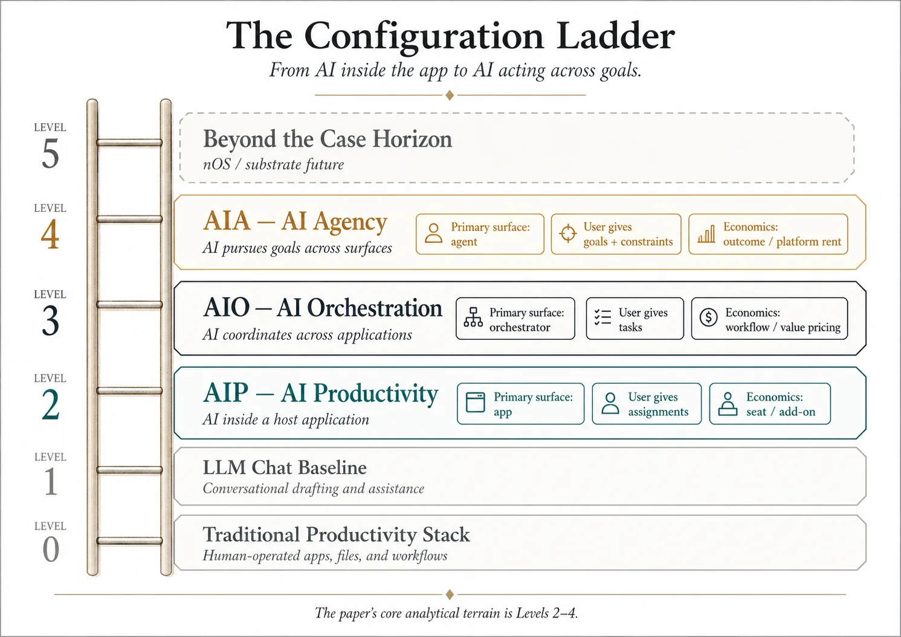
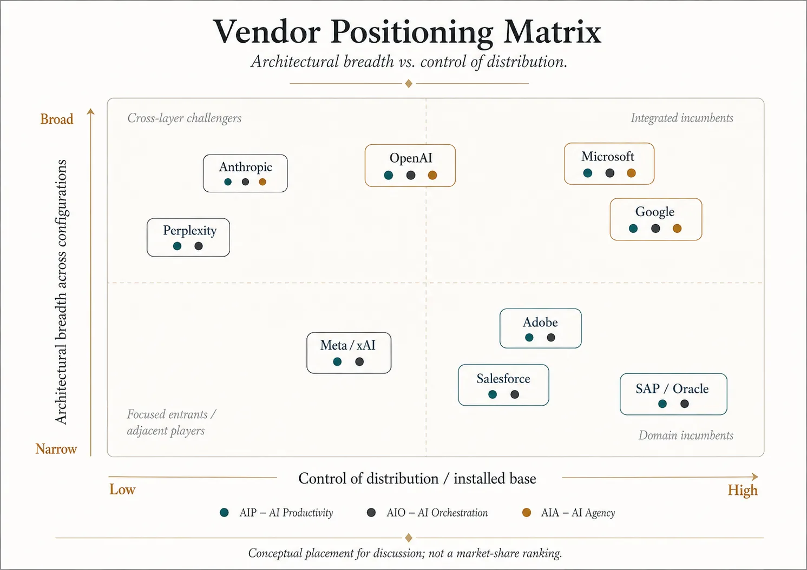
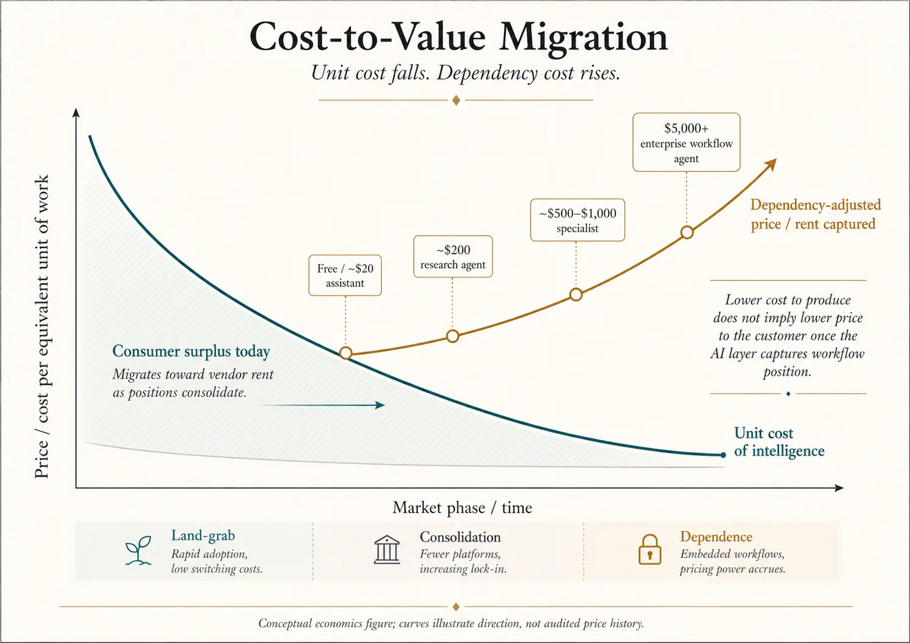
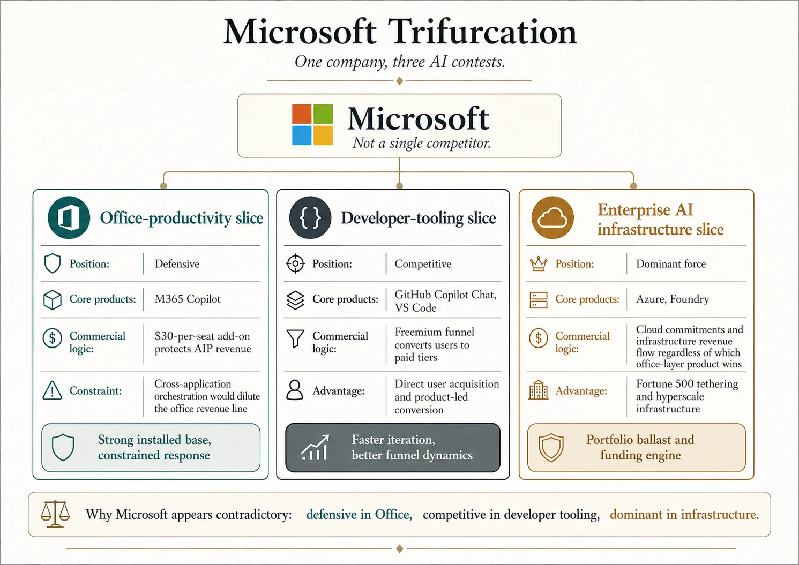

When the Tenant Becomes the Landlord
ABSTRACT. Between October 2025 and April 2026, the leading frontier-model vendors and the hyperscaler platforms distributing them advanced positions that diverge across the architectural stack rather than competing for the same layer of it, in what may be the most consequential platform migration in computing since the decoupling of software from hardware that enabled cloud-native computing. Anthropic completed a six-month traversal of Microsoft Office through native Claude integrations and crossed $30 billion in annualized revenue run rate by April 2026, passing OpenAI for the first time. Google launched Workspace Intelligence, a cross-application semantic layer consolidating Gmail, Drive, Docs, Sheets, Slides, Chat, and Calendar under a Gemini-powered orchestration surface. OpenAI shipped Atlas (an AI-native browser) and Frontier (an enterprise semantic layer), announced a desktop superapp consolidating ChatGPT, Codex, and Atlas under a single platform, and reached $24 billion annualized revenue. Perplexity scaled Comet (an AI-native browser) and Computer (an autonomous agent platform) past 100 million monthly active users at a $20 billion valuation, expanding Personal Computer to all Mac users in May 2026. Meta acquired Manus (the autonomous AI agent built by Butterfly Effect) for approximately $2 billion in December 2025 and committed $115 to $135 billion in 2026 AI infrastructure. Amazon committed roughly $200 billion in 2026 AI infrastructure and up to $25 billion in cumulative Anthropic investment, positioning AWS Bedrock as the primary cloud-distribution channel for the frontier-model layer.
The velocity is not incidental. Frontier-model vendors compete simultaneously on capability advancement (DeepSeek V4's compressed sparse attention mechanisms continue to lower frontier-inference costs) and monetized engagement growth (daily active paying users and time-in-app per paid user have converged as operative measures of platform position ahead of public-market events). Read individually, the moves can be justified on conventional terms (market share capture, productivity feature improvement, distribution expansion). Read together, they make more analytical sense as positioning across three observable architectural states for the productivity and operating-system stack, here designated AIP (AI Productivity), AIO (AI Orchestration), and AIA (AI Agency), and as evidence that the migration toward a destination beyond those three states is already underway.
This case examines the empirical record from October 2025 through April 2026, places it in the context of prior platform migrations, and asks students to reason about which configuration captures the value, on what timeline, and which vendor is positioned to win. The case is the analytical companion to the author's nOS Manifesto, which signals the direction in which computing will transition over the next two decades: extending the trajectory that personal computing began, that connected computing scaled, and that cloud computing distilled into the present configuration. The case stress-tests that signaled trajectory against the empirical record.
1. The Question the Case Examines
A first reading of the empirical record might frame the strategic question as a contest between two configurations: AIP, in which AI lives inside existing productivity applications as a sidebar feature, and AIO, in which AI becomes the primary surface and the productivity application is reduced to a rendering peripheral. Such a reading would trace Anthropic's six-month traversal of Microsoft Office (Excel in October 2025, PowerPoint in February 2026, Word in April 2026) and conclude that the entrant was building toward an architectural inversion of the productivity stack.
That reading is incomplete. Within three weeks of the binary framing being plausible, three developments forced its analytical structure to be rebuilt. Google launched Workspace Intelligence on April 22, 2026, demonstrating that the productivity vendor with the deepest vertical integration across email, storage, productivity, and identity could capture AIO from inside its own incumbent position rather than being captured by it. OpenAI consolidated its product strategy around a desktop superapp announced March 19, 2026, integrating ChatGPT, Codex, and the Atlas browser, and supplemented this with the Frontier enterprise platform launched in February 2026 and the continued investment in AI-native hardware through the Jony Ive partnership; OpenAI is positioning across all three observable configurations simultaneously rather than committing to one. Perplexity scaled past 100 million monthly active users on the strength of an AI-native browser (Comet) and an autonomous agent platform (Computer) that together represent AIO and AIA execution at consumer scale, with Personal Computer for Mac reaching general availability across Pro, Enterprise, and Max subscribers on May 7, 2026.
These developments collectively demonstrate that the binary framing understated the decision space. The strategic question facing the next generation of vendors, enterprises, regulators, and educators is not whether AI lives inside the productivity application or replaces it. It is which architectural layer captures platform power across the entire knowledge-work surface, what configuration of vendors and incumbents survives that capture, on what timeline, and what an institution should do now in light of those uncertainties.
The future-facing nOS Manifesto, written separately from this case, is a distant vision in the same way that the 1939 World's Fair GM presentation "Futurama" in the Highways and Horizons pavilion remains a distant vision in 2026, even though self-driving automotive technology has emerged. The manifesto argues that platform power has migrated up the architectural stack roughly once per decade for the last forty years, that the migration now underway is to the AI orchestration layer, and that three observable configurations describe the empirical record of that migration; the destination beyond those three configurations, named in the manifesto and not in this case, is a category change rather than a configuration. This case examines the observable trajectory the manifesto's analytical position rests on. Each document can be read independently; the case stands on the empirical record alone, the manifesto stands on the analytical position alone. Reading both adds the contextual "why" that explains the relationship between the trajectory and its destination.
2. The Three Configurations
The three configurations are categorical boundaries defined by structural conditions of membership, not by enumeration of current shipping examples. Any AI capability that satisfies a configuration's structural conditions belongs in the category, regardless of whether the capability is currently shipping at production maturity, in development, in research, or in design ideation. What occupies each category at any moment is empirical fill, distinct from the category definition; Section 3 documents the in-production subcircle of each category, while this section establishes the boundaries that determine membership.

The analytical apparatus borrows structure from SAE International's J3016 Standard for levels of driving automation, which defines a progressive-autonomy framework with bounded operational design domains. Where SAE J3016 distinguishes Level 0 (no automation) through Level 5 (full automation with no operational design domain restriction), the three configurations in this case correspond to Levels 2 through 4: bounded autonomy at increasing scope and decreasing user-direction requirement. Level 1 in the J3016 analog (driver assistance with active human operation) corresponds to the LLM chat baseline that precedes AIP and is implicit throughout the case but not engaged as a configuration. Level 5 in the J3016 analog (full automation without operational design domain restriction) corresponds to nOS, the destination beyond the three configurations that the manifesto engages and this case does not.
2.1. AIP: AI Productivity
AIP is the category of AI capability deployed inside a host application's bounded domain, performing assignment-based work the application was designed to support. The host application defines the data model, the operations available, the output format, and the commercial relationship with the user; the AI extends the application's capability without crossing its boundaries.
The structural conditions of membership in AIP: the AI operates within a single host application or closely coupled application family; the AI's work is initiated by user assignment within that application's domain; the AI's output is rendered through the application's native primitives; the AI's commercial relationship with the user runs through the host vendor's subscription or licensing structure. A capability that crosses applications, that operates without user-defined task assignment, or that maintains commercial relationship independent of the host vendor sits outside AIP regardless of its underlying technology.
The illustrative example sits inside a productivity application as a workplace assistant that drafts a formal letter, edits a paragraph for tone, or formats a document according to the application's style primitives. The capability is meaningfully more than a chat interface (it performs work the application was designed for, at quality the application's users expect), but it is bounded by the host application's domain. Equivalent examples sit inside spreadsheet applications, presentation applications, email applications, and developer environments. The category persists wherever AI capability is bounded by a host application's operational domain.
The upper boundary of AIP is the host application's reach. A capability that maintains coherent state across applications, that orchestrates work spanning multiple host applications, or that operates without a host application's commercial container belongs in AIO rather than AIP. The lower boundary is the LLM chat baseline: a capability that produces only conversational response without performing assignment-based work within an application's domain has not crossed into AIP.
2.2. AIO: AI Orchestration
AIO is the category of AI capability that maintains coherent state across application boundaries, executing user-assigned tasks that require coordination among applications, tools, operating-system surfaces, or data sources not designed to share state directly. The orchestrator is the primary surface for the work; host applications persist as substrates the orchestrator invokes when their formatting or computational primitives are required.
The structural conditions of membership in AIO: the AI operates across multiple application boundaries, file systems, tool integrations, or service surfaces; the AI's work is initiated by user-defined task assignment with goal parameters the user specifies; the AI maintains coherent state across the surfaces it orchestrates; the AI's commercial relationship with the user is independent of any single host application's subscription. AIO exists as a distinct category because the work that needs doing crosses bounded domains, and the orchestrator's structural capability is maintaining coherent state across domains that were never designed to share it. No individual application has visibility outside its own domain; AIO does.
The illustrative example: a digital workplace assistant that receives the assignment "prepare the quarterly review packet" and proceeds to collect performance data from the financial system, sales pipeline data from the CRM, customer satisfaction data from the survey platform, format the data into a coherent narrative document, generate supporting visualizations, package the deliverable, and present it for review. The assistant invokes each application as a substrate, summons each tool when its primitives are required, and maintains the cross-application context no single application could maintain.
The upper boundary of AIO is task-based assignment with heteronomy: the orchestrator does not initiate work proactively, does not operate without user-defined task scope, and does not extend autonomy beyond the boundaries the assignment establishes. A capability that initiates work proactively, that operates against goal definitions without task-level decomposition, or that maintains autonomy across task boundaries belongs in AIA rather than AIO. The lower boundary is single-application output: a capability that produces output bounded by a single application's domain has not crossed into AIO.
2.3. AIA: AI Agency
AIA is the category of AI capability that operates with proactive agency, initiating work and executing goals across surfaces without requiring task-level user direction. The user defines goals, success criteria, and operating constraints; the agent identifies opportunities, evaluates options, executes work, and reports outcomes. The agent's commercial relationship with the user is goal-completion-based rather than subscription-or-task-based.
The structural conditions of membership in AIA: the AI initiates work proactively rather than awaiting task-level user direction; the AI operates across applications, operating systems, and other surfaces it does not own; the AI executes goals rather than tasks, with the user providing goal parameters and success criteria rather than step-by-step instructions; the AI maintains autonomy at the appropriate operational scope. The scope spans a continuous spectrum from narrow-domain proactive decision-making (Google's Pixel call screening that decides which calls reach the user based on training accumulated from past behavior, email spam filtering that determines what reaches the inbox, trading bots that execute within rudimentary goal constraints) to strategic-scope proactive opportunity-identification (an agent that identifies competitive pressure in a regulated industry, designs a product to address it, evaluates manufacturing options across geographies, projects compliance and pass-rate outcomes, and presents a complete business case for decision).
Both endpoints of the spectrum are inside AIA. The category does not require any single product to span the full range; what makes a capability AIA is satisfaction of the structural conditions, not the scope at which it operates. A capability that requires task-level user direction at any operational scope sits outside AIA regardless of how sophisticated its execution; a capability that initiates work proactively at any operational scope sits inside AIA regardless of how narrow its domain.
The upper boundary of AIA is the operational design domain restriction. An agent that operates with full autonomy across unbounded operational scope, without any human-defined goal definition or success criteria, sits in nOS territory rather than AIA; the manifesto engages that boundary and this case does not. The lower boundary is task-level user direction: a capability that requires the user to specify task decomposition rather than goal parameters sits in AIO rather than AIA, regardless of its technical sophistication.
The autonomy distinctions across AIP, AIO, and AIA map onto a workplace-role spectrum that illustrates the boundaries without implying that any configuration is strategically more valuable than another. Productivity corresponds to the role of an in-application assistant: present where the work happens, capable of performing the work at quality, bounded by the application's domain. Orchestration corresponds to the role of an intern or junior associate: capable of cross-application work, dependable on assigned tasks, requiring direction at the task level and verification at completion. Agency corresponds to the role of a senior associate or manager: trusted with goals and budgets, evaluated on outcomes rather than activities, reviewed periodically rather than supervised continuously. The roles persist in any organization simultaneously because they serve different categories of work; the case's analytical claim is that Productivity, Orchestration, and Agency persist in the architectural stack for the same reason, with capability scaled to the requirement of each category of work rather than maximized for autonomy's sake.
2.4. Why these three and what lies beyond them
The three configurations are not exhaustive of all imaginable architectural states for the productivity and operating-system stack; nor are they even exhaustive of the architectural states currently shipping in production when the open-source ecosystem is considered as of May 2026. Scenarios this analysis has not anticipated are possible by definition, including: where AI fails to capture platform power at any layer, platform power fragments across multiple AI vendors, or platform layer migrates somewhere not predictable. All are viable and realistic. The case acknowledges these possibilities without engaging them; the burden of identifying and defending such alternatives lies with the reader who proposes them.
The case introduces the three configurations as the observable record of a migration in progress; the manifesto treats them as the staging ground for a category change beyond the framing the case establishes. The two posture differently for analytical reasons. The case is bounded by what has shipped and by the categorical boundaries that determine what could ship within the framework; the manifesto is bounded by where the trajectory points beyond those boundaries. The two boundaries are different by design and both are useful. The three-configuration framework serves as an organizing structure for the analysis that follows, and invites readers to argue with it.
3. The Empirical Record, October 2025 to April 2026
The case examines the empirical record through the three configurations rather than through the vendors producing them. Exhibit 1 provides the vendor-focused view across configurations.
3.1. AIP in Production
AIP is the most heavily populated configuration in the empirical record. Every major vendor ships products inside the boundary; the analytical questions are not whether the configuration exists but whether it is stable, how the unit economics work, and whether the adoption metrics support the pricing structures vendors have built around it.
The canonical case: Microsoft 365 Copilot
Microsoft 365 Copilot is the most visible AIP product at scale and the canonical case for the configuration's economics. Paid Copilot seats reached approximately 20 million by March 31, 2026, the close of Microsoft's fiscal Q3, against a Microsoft 365 commercial seat base of approximately 415 million worldwide. Year-over-year seat growth ran above 160 percent through Q2 FY26 and accelerated into Q3 FY26 per the April 29 earnings call. Headline penetration is approximately 4.8 percent of the M365 commercial base.
The seat count requires unpacking. Microsoft's actual pricing is layered through enterprise agreements, business and individual tiers, promotional rates, bundle SKUs, and adoption-credit mechanisms that Microsoft does not break out publicly; the headline $30 per seat per month does not represent what Microsoft receives per paid seat at scale. Regulatory attention has followed the gap between headline and outcome, with the Australian Competition and Consumer Commission filing suit in October 2025 over Copilot bundling disclosure. Multiplying 20 million by $30 produces a revenue figure that overstates what Microsoft actually receives.
The adoption metrics inside the paid base are where the configuration's stability becomes the analytical question. Workplace conversion rates (the share of employees with a Copilot license who actually choose to use it) sit at approximately 35.8 percent across multiple third-party surveys. When employees have simultaneous access to Copilot, ChatGPT, and Gemini, Copilot's active usage share collapses to approximately 8 percent. These numbers do not describe a failed product; they describe an adoption curve materially slower than the headline unit economics require, and a workforce whose actual usage is migrating toward AI surfaces the productivity vendor did not build.
Three readings of the seat-and-usage data are defensible. First: the configuration's pricing is not stable at the present adoption mix and the price drops, the value rises, or users migrate to a different configuration. Second: adoption is being held back not by the product but by the procurement cycle inside large enterprises, and steady-state adoption will look materially different in eighteen months as deployment matures. Third: Copilot is the wrong unit of analysis. Microsoft's broader AI strategy (Azure OpenAI, the Foundry model marketplace, the GitHub developer-tooling stack, and the enterprise-scale deployment capability the Fortune 500 tethering produces) is the load-bearing portfolio, and Copilot is one product within it. Q3 FY26 results support the third reading: Microsoft's AI annualized revenue run rate reached $37 billion (up 123 percent year-over-year), Azure grew 40 percent, and commercial cloud remaining performance obligations doubled to $627 billion. The case treats all three readings as live and returns to the third in Section 4, where the cross-vendor dynamics analysis engages Microsoft's strategic position as a portfolio rather than as a single product.
The capital intensity of the defense is the strongest evidence Microsoft itself reads the strategic situation as unsettled. Quarterly AI capital expenditure crossed $37.5 billion in late 2025. Full-year FY26 capex guidance, raised on the April 29 call, sits at approximately $190 billion against a prior consensus near $154.6 billion. Whatever AIP produces commercially, Microsoft is investing as if the underlying capability race remains open.
The second leg: Google Workspace AI features
Google's position differs from Microsoft's in two respects. Google folded Gemini into the Workspace base subscription at approximately $2 per seat per month price increase rather than charging a $30 add-on, trading near-term AI revenue for adoption velocity and platform-position retention. Google Workspace also operates on a structurally different base: 3 billion monthly active users and approximately 11 million paying business customers (up from roughly 8 million a year prior), with Gemini Enterprise paid monthly active users growing 40 percent quarter-over-quarter through Q1 2026 and Google Cloud generative-AI revenue growing nearly 800 percent year-over-year per the April 29 earnings call. Google Cloud revenue reached $20 billion in Q1 2026, up 63 percent year-over-year.
The 3-billion-user base matters because the comparison cannot be reduced to paid-seat counts. Google operates two materially different revenue mechanisms in the consumer Workspace base (subscription for paid tiers, advertising and adjacent monetization for the free tier) and the advertising mechanism has no Microsoft counterpart. The case does not engage the advertising-revenue analysis here; the discussion questions ask the student to consider what the asymmetry implies for long-run unit economics.
The pricing strategies produce different but not incomparable outcomes. Google's model produces higher adoption velocity within the Workspace customer base; Microsoft's produces higher nominal revenue per active user, qualified by the discount layers above. The configuration's stability question cuts in opposite directions for the two vendors: Google must demonstrate that low-margin AIP is sustainable as inference costs evolve; Microsoft must demonstrate the Copilot price-value relationship holds as alternatives proliferate.
The entry-point case: Anthropic's original Office add-ins
Anthropic's first Microsoft Office deployments were AIP products by the structural test. Claude for Excel, launched October 27, 2025 as a research preview limited to Max and Enterprise plan customers, premiered as a sidebar inside an existing application. Claude for PowerPoint, launched February 5, 2026, was structurally the same. Both occupied AIP in their original deployments. The analytical importance is not the AIP classification but their position as the entry point for the AIO move that followed in March and April 2026, which Section 3.2 engages.
The developer-tooling case: GitHub Copilot Chat in VS Code
The structural test that captures the office-productivity slice captures the developer-tooling slice. GitHub Copilot Chat, deployed inside VS Code, is AI as a feature inside an existing developer application. The user opens the editor to begin work and summons the AI when needed; the editor controls the file format, the rendering pipeline, and the commercial relationship.
Microsoft's developer-tooling product reaches a base the office-productivity product cannot match: VS Code holds approximately 75 percent of the professional developer market, GitHub serves approximately 100 million developers, and Copilot Chat in VS Code has a free tier converting to paid usage. The office product cannot replicate this acquisition flow because the office product requires paid M365 plus the $30 Copilot add-on to deliver any AI experience. The asymmetry between Microsoft's office-productivity position and Microsoft's developer-tooling position is one of the cross-vendor dynamics Section 4 engages explicitly.
What AIP looks like in production
Three observations follow. First, AIP is the easiest configuration to deploy and the most heavily populated; every major vendor ships within the boundary. Second, the unit economics depend more on pricing structure than on technical capability; Google's $2 increment and Microsoft's $30 add-on deploy comparable technical capability under materially different commercial frames, with materially different adoption results. Third, stability is genuinely contested: Microsoft's Copilot adoption metrics, taken seriously, suggest AIP may not be a long-run equilibrium for the office-productivity slice, even as it remains the dominant configuration for the developer-tooling slice. The configuration's heterogeneity across slices is why the case treats slices as separate units of analysis where evidence supports it.
3.2. AIO in Production
Where AIP is bounded by the host application's reach, AIO is bounded by the orchestrator's access to tools and the clarity of tasks given. Orchestration does not create its own tools; it works through operating-system surfaces, Model Context Protocol (MCP) integrations, scripted IDE connections, and direct API access to underlying applications. The orchestrator can assign work to productivity-layer capabilities within applications when this maximizes context and attention, then collect-verify, assemble-test, and document-deliver against the user's assigned tasks.
The configuration shifted fastest among the three during the empirical window. Six weeks separated the three releases that took AIO from a defensible architectural argument to a configuration shipping at consumer and enterprise scale from two vendors approaching it from opposite ends of the productivity stack.
The two-front advance: Anthropic and Google, six weeks apart
Anthropic's traversal of Microsoft Office shipped its architectural payload on March 11, 2026, when Claude for Excel and Claude for PowerPoint received shared conversational context. Before that release, the two products were AIP integrations inside their respective host applications; after it, the AI carried context across documents, spreadsheets, and slides within a single conversation, and the productivity application became the rendering peripheral the AIO definition requires. The architectural primitive that distinguishes AIO from AIP shipped that day. Six weeks later, on April 22 at Cloud Next '26, Google launched Workspace Intelligence: a cross-application semantic layer mapping Gmail, Drive, Docs, Sheets, Slides, Chat, and Calendar into shared context for Gemini-powered agents. Two days before that, on April 10, Anthropic completed the Office triad when Claude for Word inherited the same shared-context capability that Excel and PowerPoint had received in March. The three releases in six weeks demonstrated AIO was not a single-vendor architectural argument but a shipping configuration with two implementations from opposite directions.
The two implementations differ in ways that matter for the strategic analysis. Anthropic built AIO from outside the productivity suite, layering cross-application context over Microsoft's host applications without owning any of them. The host vendor's interface, file formats, and rendering pipelines persist; what changes is where the context lives and which surface the user starts in. Google built AIO from inside the productivity suite, with cross-application context running as a native semantic layer over applications Google already owned. The host vendor's interface persists; what changes is that the productivity suite is now its own AI orchestration substrate, with no entrant required to deliver the configuration.
The strategic implications cut differently. Anthropic's external-overlay approach means it can ship AIO wherever the productivity suite is used, including environments Google and Microsoft do not control. The approach is constrained: the cross-application context Anthropic builds is parasitic on host applications the host vendor can change, and the user experience depends on integration quality Anthropic cannot fully determine. Google's internal-incumbent approach means the configuration ships natively, with full integration quality and full control over host applications. The approach is constrained: Workspace Intelligence is locked to Workspace customers, and the 11 million paying business customer base, while growing, is smaller than Microsoft's M365 commercial base.
The financial trajectories underneath the launches are part of why the two-front advance reads as a genuine contest rather than as leader-and-follower. Anthropic's annualized revenue run rate trajectory was $14 billion in February 2026, $19 billion in March, and $30 billion in April, passing OpenAI on top-line revenue for the first time. Eight of the Fortune 10 are now Claude customers and over 1,000 enterprise customers pay more than $1 million annually (doubled from 500+ in under two months following the February Series G). Claude Code alone passed $2.5 billion annualized run rate by February 2026, with enterprise representing over half of Claude Code revenue. Google Cloud revenue at $20 billion in Q1 2026 (+63 percent year-over-year) anchors the Workspace Intelligence deployment at hyperscaler distribution scale. Both vendors are deploying AIO into customer bases that are responding; the analytical question is which architectural approach (external overlay versus internal incumbent) produces the more defensible long-run position.
The developer-tooling slice is further along than the office-productivity slice
The developer-tooling slice has been in AIO execution longer and at greater depth. The AIP-to-AIO transition that office-productivity has been crossing in 2026 happened in developer-tooling in 2024 and 2025, and AIO has been the dominant pattern there for over a year.
Cursor (built by Anysphere) is an AI-primary code editor in which the AI is the principal interface and the editing surface is the rendering peripheral. The user describes what is needed; the AI generates and modifies code across files; the editor renders the result. Cursor reached approximately $500 million in annualized revenue by mid-2025 and continued to grow through Q1 2026. Replit operates a similar AIO architecture in a browser-based environment; its Agent product, launched in late 2024, executes multi-step development tasks autonomously with the development environment serving as substrate. Anthropic's Claude Code, launched as a standalone product in February 2025, reached $2.5 billion run-rate by February 2026 (doubling from the start of 2026) and represents AIO in command-line form: the developer describes the task; Claude Code reads the codebase, plans a sequence of actions, executes them using real development tools, evaluates the result, and adjusts. The editor, test runner, version control system, and package manager are tools the AI invokes; the developer's primary surface is the conversation. OpenAI's Codex, relaunched in 2025 as part of the ChatGPT-Codex consolidation and architecturally distinct from the 2021 GPT-3-based Codex that was discontinued in 2023, shipped as a standalone macOS application on February 2, 2026 and passed $1 billion annualized run-rate by January 2026.
The developer-tooling case matters beyond its standalone evidence for two reasons. First, it demonstrates orchestration is not a future-state hypothetical; the configuration has been the dominant architectural pattern in a major slice of the productivity stack for over a year, with material revenue, defensible adoption, and consumer-scale execution. The office-productivity slice can be analyzed against an existing benchmark rather than against an imagined one. Second, the developer-tooling case shows what AIO looks like when it matures: the editor (or document, or spreadsheet) does not disappear; it persists as a rendering peripheral while platform rent migrates to the AI orchestration surface. The empirical answer to the "but doesn't orchestration just mean killing the application?" question is that the application persists; what changes is which surface is primary.
OpenAI's parallel AIO push: Atlas and Frontier
OpenAI shipped two AIO products during the empirical window. Atlas, launched October 21, 2025 for macOS, is an AI-native browser with agent mode that operates across web surfaces; the user opens Atlas to navigate, research, summarize, and execute web-based tasks, with traditional pages serving as the substrate the AI reads from and acts on. Atlas is AIO by the structural test: the AI is the primary surface, the browser layer is what it orchestrates through, the cross-application context the user maintains runs through Atlas rather than through bookmarks-and-tabs. Frontier, the enterprise semantic layer OpenAI launched in February 2026, is the enterprise-scope AIO product: the cross-application context spans the enterprise data layer rather than the consumer web layer. Atlas agent mode is available to Plus, Pro, and Business subscribers; Frontier is available to enterprise customers.
The March 19, 2026 superapp consolidation announcement positions Atlas and Frontier (along with Codex and ChatGPT itself) as components of a unified product surface that would extend OpenAI's AIO products toward AIA execution. Section 3.3 engages the superapp consolidation as the AIA move; in the empirical record through April 2026, Atlas and Frontier are deployed AIO products and the superapp is an announced architectural direction without a shipping date.
The consumer-scale AIO case: Perplexity
Perplexity's Comet browser is AIO at consumer scale. Released to paid subscribers in July 2025 and made free worldwide in October 2025, Comet sits as Perplexity's primary surface: the user opens Comet to navigate, research, summarize, and execute multi-step web tasks, with traditional pages as substrate. The browser is part of a broader Perplexity product family that crossed 100 million monthly active users by early 2026, with annualized revenue reaching approximately $450 million in March 2026 (up roughly 50 percent in a single month) at a $20 billion valuation following the Series E-6 round.
Comet is AIO rather than AIA because the user begins in the browser and the browser is Perplexity's surface; AIA requires the AI to operate beneath the browser layer rather than as the primary surface. Perplexity's Computer product, released in February 2026, is a different architectural object that engages AIA; Section 3.3 takes that up. The Comet evidence here matters because it demonstrates AIO at consumer scale, with adoption metrics that establish the configuration is not an enterprise-only pattern.
Microsoft's structural position in AIO
Microsoft's orchestration position is the configuration's most analytically interesting structural feature. Across the office-productivity slice, the vendor with the largest installed base and the most capital invested in AI is the vendor furthest from production-mature AIO. Microsoft 365 Copilot remains a productivity-layer product; the cross-application semantic layer Anthropic and Google have shipped at production maturity is not present in the Copilot architecture at equivalent maturity as of April 2026, though Microsoft has signaled orchestration-direction features on the roadmap (Copilot Pages, agent-mode features across M365 apps, Copilot Workspace). The reasons are partly technical (the M365 architecture was built for productivity-style integration and the retrofit to orchestration is non-trivial) and partly commercial (the Copilot pricing model produces revenue at the productivity layer that orchestration would dilute). Section 4 engages the commercial constraint in depth.
The developer-tooling slice tells the opposite story. GitHub Copilot Chat, while still a productivity-layer product in the VS Code integration, has been evolving toward agentic execution patterns that begin to engage orchestration architecturally; the Copilot Workspace product, agent-mode features in GitHub Copilot, and integration with the broader GitHub Actions and Copilot Studio surfaces are the orchestration direction Microsoft is moving in the developer slice. The asymmetry is the case's central observation about Microsoft as a portfolio: structurally behind on AIO in the office-productivity slice where its largest revenue line lives; structurally competitive on AIO in the developer-tooling slice where the acquisition flow has freemium economics. Section 4 engages the trifurcation.
What AIO looks like in production
Three observations follow. First, orchestration ships at scale in two slices of the productivity stack (office and developer-tooling) at materially different levels of maturity, with developer-tooling further along. Second, the architectural choice between external-overlay (Anthropic) and internal-incumbent (Google) produces two viable approaches with different strategic constraints; neither vendor has locked the configuration. Third, the orchestration transition in the office-productivity slice is structurally constrained by productivity-layer commercial commitments that the orchestration architecture would dilute, which is why Microsoft, the vendor with the most to defend at the productivity layer, has the weakest orchestration position in the office slice while having a competitive position in the developer slice. The configuration's heterogeneity across slices and the commercial constraints on the productivity-to-orchestration transition are the load-bearing observations Section 4 builds on.
3.3. AIA in Production
Where AIO is bounded by user-defined task assignment, AIA is bounded by user-defined goal definition and success criteria. The agent initiates work proactively, executes across surfaces, and operates with autonomy across the spectrum from narrow-domain decision-making to strategic-scope opportunity-identification. The empirical record contains shipping AIA products at the narrow-domain end of the spectrum, partially shipping AIA products at the middle range, and aspirational AIA products at the strategic-scope end. The case engages all three honestly.
Narrow-domain proactive agency at consumer scale
The narrow-domain end of AIA has shipped at consumer scale across multiple vendors and product categories without being labeled as agency in their product marketing. Google's Pixel call-screening feature decides which calls reach the user based on training accumulated from past call-handling behavior; the user did not direct the phone to handle a specific call but the phone decided how to handle it within the goal parameters the user implicitly established by accepting or rejecting prior calls. The capability is fully proactive (the AI initiates the decision), operates across the operating-system call surface, executes a goal rather than a task (handle unwanted calls without interrupting the user), and runs without per-call user direction. Email spam filtering operates on the same architectural pattern: the AI decides what reaches the inbox based on goal parameters (block unwanted communication) without per-message user direction. Algorithmic trading bots execute within rudimentary goal constraints (maximize returns within risk tolerance) without per-trade user direction. The narrow-domain proactive-agency pattern is shipping at consumer scale across multiple categories; the case names it as agency to demonstrate that the configuration is not a future-state hypothetical at any point along the spectrum.
The closest production-mature general-purpose AIA case: Perplexity Computer with Personal Computer
Perplexity's Computer and Personal Computer products are the closest to general-purpose AIA at production maturity in the empirical record. Computer, released in February 2026, is a digital-worker platform that connects to more than 400 external tools (Salesforce, Microsoft Teams, HubSpot, MySQL, GitHub, and the broader enterprise SaaS stack), routes work across approximately 20 frontier models, and executes multi-step workflows that previously required human task-switching across applications. Personal Computer, announced March 11, 2026 and made generally available to Pro, Enterprise, and Max Mac users on May 7, 2026, extends this to the operating-system layer: the AI accesses the local file system, native macOS applications, and the Comet browser through a hybrid local-cloud architecture, executing tasks autonomously while remaining auditable and reversible.
The two products satisfy both AIA architectural primitives. Layer-agnostic execution is present in the 400-plus tool integrations and multi-model routing harness. Proactive agency is present in the workflow architecture: the user describes a goal, and Computer plans, executes, monitors, and reports rather than producing a description of how the goal could be accomplished. Personal Computer is positioned explicitly against the broader local-agent category that includes open-source projects such as OpenClaw and OpenJarvis, rather than as a single-vendor product. The qualifier on production maturity is the user-base scope: Computer and Personal Computer are deployed to Perplexity's paid base, which is materially smaller than the 100-million-monthly-active-user total. The general-purpose AIA evidence is real but the consumer-scale footprint is partial.
The directional AIA case: OpenAI's superapp consolidation
OpenAI's three-product trajectory (ChatGPT, Codex, Atlas) is positioned for AIA but has not yet shipped the configuration in unified form. The component products exist and are deployed; Section 3.2 documents them as AIO. The superapp consolidation announced March 19, 2026 by Fidji Simo, OpenAI's CEO of Applications, is the architectural move that would convert the three AIO products into a unified AIA product surface. The internal memo cites "fragmentation across too many apps and stacks" and frames the consolidation as the response to Anthropic's lead, which by independent measurement had reached 73 percent of first-time enterprise AI spending against OpenAI's 27 percent. The superapp's stated architecture (ChatGPT as orchestration surface, Codex as agentic execution layer, Atlas as web-action layer, the desktop application running across operating systems) is AIA by the structural test. The qualifier is the superapp has not shipped; OpenAI announced "coming months" without a specific date. The case treats OpenAI's AIA position as directional rather than deployed.
The protocol-level AIA case: Anthropic and MCP
Anthropic's approach to AIA runs through the Model Context Protocol and the multi-cloud distribution architecture rather than through a single superapp product. MCP, open-sourced by Anthropic in 2024, has been adopted by Google, OpenAI, and a growing set of model vendors as the standard for cross-vendor tool-and-context exchange. The protocol is connective tissue layer-agnostic distribution requires; it allows AI systems from different vendors to share context, invoke tools, and orchestrate work across surfaces without any one vendor owning the orchestration layer. Anthropic's multi-cloud distribution through Amazon Bedrock, Google Vertex AI, and Microsoft Foundry extends the layer-agnostic positioning beyond protocols and into infrastructure. The May 2026 Anthropic-xAI Colossus deal, which gives Anthropic access to more than 300 megawatts of compute capacity at the xAI Memphis facility, immediately doubled Claude Code usage limits and demonstrates that the layer-agnostic strategy extends to compute-substrate diversification when the dominant providers cannot meet demand.
The proactive-agency primitive shows up in Anthropic's product portfolio rather than in a single AIA flagship. Claude Code, at $2.5 billion run rate by February 2026, performs software engineering tasks rather than describing them, and operates across the developer's full local environment as substrate. Cowork, Anthropic's enterprise productivity platform, operates similarly across the enterprise productivity stack. The Chrome browser agent Anthropic shipped in beta in early 2026 operates across web surfaces. None of these is presented as a unified AIA product the way OpenAI's superapp announcement positions; Anthropic's AIA architecture is distributed across the portfolio, with MCP providing the connective tissue.
The strategic implications differ from OpenAI's. Anthropic's AIA position is harder to describe in a single sentence (it is not "the Claude superapp") but easier to defend architecturally, because the layer-agnostic distribution is built into the protocols rather than into a single product. If MCP becomes the default cross-vendor context protocol, Anthropic captures AIA regardless of which product surface a user happens to begin in. The architectural bet the manifesto identifies as the staging ground for the destination beyond the three observable configurations runs through this protocol-level position, though the case does not engage that question; the configurations are the empirical record, not the destination.
The acquired-AIA case: Meta's Manus
Manus, the autonomous AI agent developed by Butterfly Effect and acquired by Meta in December 2025 for approximately $2 billion, is the most architecturally distinctive AIA product in the empirical record. Manus operates as a multi-agent system in a server-side sandboxed Ubuntu environment with a real Chromium browser, a shell with sudo privileges, file-system access, and interpreters for Python and Node.js. The user describes a goal; Manus's planning sub-agent (using Monte Carlo tree search) decomposes it, the execution sub-agent operates real tools in the sandbox, and the validation sub-agent runs adversarial testing on intermediate results. The agent continues working after the user's session closes; the user can watch progress through the "Manus's Computer" interface. The underlying models include Anthropic's Claude (Sonnet 3.5 and successors) and fine-tuned Alibaba Qwen variants, with Manus operating as an orchestration harness over multiple frontier models rather than as a single-model product. The Manus Browser Operator Chrome extension, launched November 18, 2025, gives the agent access to the user's authenticated browser sessions for cross-site task completion.
Manus revenue reached approximately $125 million annualized by December 2025 (up from $90 million in August). The Meta acquisition gives Manus the infrastructure backing of Meta's $115 to $135 billion 2026 AI infrastructure commitment and positions Manus as a productized AIA product within the broader Meta AI strategy that includes the Muse Spark closed-source model (debuted April 2026) and the AI-powered ad and engagement features inside Meta's core platforms. Manus continues to operate as its own product post-acquisition, with subscriptions available directly from manus.im.
Manus satisfies both AIA structural primitives more cleanly than most products in the empirical record. The agent initiates work after goal-level direction; the execution spans applications, operating systems, and browser surfaces it does not own; the user defines goal parameters and success criteria rather than step-by-step instructions. The Browser Operator's permission model has drawn security analysis attention (Mindgard documented in late 2025 that the extension's debugger-cookies-all_urls permission combination provides full browser remote-control access), which is part of why Manus is at the AIA boundary: the capability requires permissions that conventional applications do not request, and the security model for shipping that capability at production maturity is still maturing.
The hardware-directional AIA case: the Jony Ive partnership
OpenAI's acquisition of Jony Ive's design firm io in May 2025 is the most aspirational AIA evidence in the record and the thinnest in terms of production maturity. The partnership targets AI-native hardware operating as a layer-agnostic AIA surface beneath traditional computing devices, with the hardware itself becoming the substrate rather than running as an application on existing substrates. No product from the partnership has shipped; the architectural intent is public, the engineering trajectory is opaque, and the production-maturity date is unspecified. The case treats the partnership as directional evidence the AIA frontier extends beyond software into hardware, without committing to timeline or product form factor.
The category-defining open-source case: OpenClaw, Hermes, and OpenJarvis
The open-source AIA ecosystem has been defining what general-purpose autonomous agency at consumer scale looks like outside the major-vendor empirical record. OpenClaw (formerly Clawdbot, originated by Peter Steinberger) reached 60,000+ GitHub stars in three days in early 2026 and operates as a self-hosted autonomous agent platform with Agent Skills, multi-channel chat integration, and heartbeat-based independent monitoring. Hermes positions as the self-improving agent with a built-in learning loop creating Markdown skill files, against OpenClaw's control-plane approach. OpenJarvis, an open-source framework from Stanford's Scaling Intelligence Lab and Hazy Research Lab, organizes around a five-primitive architecture (Intelligence, Engine, Agents, Tools and Memory, Learning) and operates as part of the broader Intelligence Per Watt research initiative; the underlying research establishes that local language models already handle 88.7 percent of single-turn chat and reasoning queries at intelligence-per-watt efficiency improving 5.3x from 2023 to 2025.
The open-source AIA ecosystem operates on different value-capture mechanisms than the major-vendor record (community contribution, hardware-ownership model, privacy-first deployment), and the maturity comparison cannot be measured against the major-vendor revenue figures. The open-source layer is shipping production AIA at consumer scale with different success criteria than the major-vendor layer; the case acknowledges both as real and engages them at the analytical weight each deserves.
What AIA looks like in production
Three observations follow. First, agency spans a continuous spectrum from narrow-domain proactive decision-making (Pixel call screening, email filtering, trading bots) shipping at consumer scale, through general-purpose multi-step agentic execution (Manus, Perplexity Computer, Claude Code, the open-source agentic frameworks) shipping at production maturity with varying autonomy modes, to strategic-scope proactive opportunity-identification (the architectural endpoint of the spectrum) which has shipping examples in specialized research domains (AlphaFold, materials-discovery systems, mathematical-reasoning models) but does not yet ship at production maturity in general-purpose business or productivity domains. The category contains all three; the empirical fill is uneven across the spectrum. Second, the configuration's leading-edge vendors approach agency through structurally different strategies: Perplexity through a consumer-scale digital-worker platform with deep tool integration, OpenAI through consumer-app consolidation, Anthropic through a protocol-and-portfolio strategy, Meta through Manus's multi-agent acquired-product approach, and the open-source ecosystem through distributed local-agent frameworks. Third, the trajectory from current empirical fill to strategic-scope general-purpose agency at production maturity is identifiable: the components (context management, long-horizon planning, self-correction under uncertainty, tool-use reliability, alignment-under-autonomy) all ship in production at narrower scope today; the engineering work to extend them to strategic-scope general-purpose deployment is conventional rather than research-frontier. The configuration's strategic implications, including the cross-vendor freemium dynamics, the architectural-bet asymmetries, the hyperscaler-as-substrate observations, and the Apple-hardware-versus-AI-orchestration question, are the load-bearing observations Section 4 builds on.

4. Change and Consequences: Two Strategic Frames
With Productivity, Orchestration, and Agency defined and validated against the empirical record, the case shifts from classification to application. The remaining sections engage how these configurations are being implemented across the consumer, business, and enterprise landscape, with the economic impact of the current momentum and the predicted acceleration. Before the analysis can engage the financial layer responsibly, two state changes already underway require examination: disruption (the mechanism by which the incumbent's response pattern produces incumbent failure modes) and value-chain inversion (the mechanism by which a new layer captures platform power from an adjacent layer). This section uses two established frameworks to evaluate both state changes against the configurations the previous sections established. The frameworks are not alternatives; they are tools for analyzing the configurations against each other and against historical patterns of platform change.
4.1. Christensen and the disruption question
Clayton Christensen's theory of disruptive innovation describes a process in which a new product takes root at the low end or in a new market segment, performs initially worse than the incumbent on dimensions the incumbent's best customers care about, and improves along its own curve until it crosses the threshold of acceptability for mainstream customers. The theory's sharpest predictive edge is the corollary that the incumbent's rational response to early disruption is to ignore it; serving the highest-margin customers along the existing performance dimension is more profitable in the short run than retooling for the new dimension. By the time the disruption matters, the incumbent's cost structure and customer-listening apparatus are calibrated to the old curve.
The diagnostic value for the configuration analysis is precise. Microsoft 365 Copilot is a sustaining innovation along Microsoft's existing performance dimension (application-bound enhancement of the M365 suite). Productivity-layer AI is what the M365 customer asked for. Orchestration and agency compete on different dimensions entirely (context continuity across applications; goal-directed work without task-level direction). The Christensen prediction is that Microsoft will continue investing in sustaining innovation along the productivity dimension and will be late to recognize the dimensional shift, because its highest-margin customers are not asking for orchestration or agency in language Microsoft's apparatus is calibrated to hear. The Q3 FY26 financial data is consistent with the prediction: Microsoft's productivity-layer revenue continues to grow strongly while the architectural transition to AIO has not shipped at production maturity in the office slice.
The framework's limitation deserves attention. Christensen-style disruption requires the entrant to survive the period during which it performs worse than the incumbent on the dimensions the incumbent's customers prioritize. Anthropic, OpenAI, Perplexity, and the open-source AIA frontier are not performing worse than Microsoft on most relevant dimensions; they are competing on different dimensions at comparable or superior capability. This makes the current empirical record a Christensen-style disruption only in the lateness-of-incumbent-recognition sense, not in the entrant-survives-while-inferior sense. The audience should engage this distinction rather than accept the framework wholesale.
4.2. Gawer, Cusumano, and the value-chain inversion question
Annabelle Gawer and Michael Cusumano's framework on platform leadership describes the process by which a vendor at one layer of a value chain captures the platform position from a vendor at an adjacent layer. The canonical case is the personal-computer industry's value-chain inversion in the 1980s: IBM controlled the system layer and treated the operating-system and processor layers as components in its system; Microsoft and Intel captured the platform positions at the operating-system and processor layers respectively, inverting the value chain so that IBM (and its successor PC vendors) became component suppliers to the platforms Microsoft and Intel owned. The platform owners captured the cross-side network effects that the system vendor had assumed it controlled.
The framework's diagnostic value for the configuration analysis is exact. The orchestration layer is structurally analogous to the position Microsoft and Intel occupied in the 1980s PC stack: a layer the productivity-suite vendors and operating-system vendors initially treat as a component or feature of their own product, but which captures cross-side network effects that the adjacent-layer vendors had assumed bound to their platforms. The case's central claim about platform-power migration is fundamentally a value-chain inversion claim. Whether the inversion completes, on what timeline, and which vendor captures the new platform position are the strategic questions the case organizes the analysis around.
The framework also names the structural conditions that determine whether the inversion succeeds. Three conditions matter: the new layer must capture cross-side network effects that the adjacent layers cannot easily replicate, the new layer must reach commercial scale before the incumbent recognizes the threat, and the new layer's pricing model must be sustainable independent of the adjacent layers' cooperation. The empirical record through April 2026 is consistent with all three conditions being partially satisfied. The cross-application context the orchestration layer maintains is structurally inaccessible to any single host application. The orchestration-layer entrants have reached commercial scale: Anthropic at $30 billion annualized revenue run rate by April 2026, OpenAI at $24 billion, Perplexity at $450 million at a $20 billion valuation. Each is positioned outside the productivity-suite incumbent's commercial control, which is the structural independence the framework names as the third condition.
Google occupies a structurally different position in this frame, and the distinction matters. Google is the productivity-suite incumbent for Workspace (3 billion monthly active users, 11 million paying business customers); when Google launched Workspace Intelligence in April 2026, Google captured AIO at the new layer from inside its own incumbent position rather than as an entrant inverting the value chain. The Gawer-Cusumano framework's prediction is therefore different for Google than for the entrants. Anthropic, OpenAI, and Perplexity face the entrant's question: can they reach platform-capture scale before the incumbents respond? Google faces the incumbent's question: can it absorb the new layer into its own platform without ceding the cross-side network effects that the new layer generates? Both are open questions; Microsoft faces the incumbent's question in the office slice without yet having demonstrated the absorption capability Google has shown.
The framework's predictive edge for the agency layer is sharper than for the orchestration layer. If orchestration captures the cross-application network effect, the question of whether agency captures a further inversion at the goal-execution layer becomes the next analytical step. The case's empirical record on agency is thinner than on orchestration, but the structural conditions Gawer and Cusumano name are equally diagnostic. Whether agency captures a second inversion is the analysis the discussion questions ask the audience to engage; the case's contribution is establishing the structural framework, not predicting the outcome.
4.3. What the frameworks together establish
The two frameworks together establish that the configuration analysis is engaging two distinct strategic questions simultaneously. Christensen's question is about the incumbent's failure mode: will Microsoft (and the other AIP-incumbent vendors) recognize the dimensional shift in time to respond strategically, or will the response be tactical at the wrong layer? Gawer-Cusumano's question is about the entrant's platform-capture mechanism: do the orchestration-layer entrants have the structural conditions in place to invert the value chain, or are they providing a feature the incumbent absorbs? The Google case adds a third question that follows from the first two: when the incumbent recognizes the dimensional shift and absorbs the new layer from inside its own position (as Google has done with Workspace Intelligence), does the incumbent capture the platform position at the new layer, or does the absorption succeed at the feature level while the platform-capture migrates elsewhere?
The questions are not redundant. An incumbent can recognize the dimensional shift and still fail to capture the new platform position (the recognition is necessary but not sufficient); an entrant can have the structural conditions for value-chain inversion and still fail to capture the platform position if the incumbent's defensive response is well-executed; an absorbing incumbent can succeed at the feature level while the platform-capture migrates elsewhere. The case treats all three questions as germane and engages each through the empirical evidence rather than through prediction. Sections 5 through 8 deploy the frameworks against specific applied cases (the citizen-developer demand-side dynamics, Apple as a structurally exposed incumbent, the cross-vendor economics including the freemium-funnel asymmetry and the Microsoft trifurcation, and the decision-maker implications). The discussion questions ask the audience to argue with the framework applications rather than to accept them.
5. The Demand-Side Force: Citizen Developers and the Knowledge-Management Problem
The strategic frameworks in Section 4 describe what the supply side of the migration looks like and the risks to incumbents without acknowledging the velocity of the migration as captured in the study period. What can be stated is that vendor positioning and product shipment strategies alone are insufficient to explain the release and adoption cadence between Q3 of 2025 and the start of Q2 2026. While the push mechanisms of the product deployments originate with the vendors, both incumbent and new entrants, the demand side from the collective consumer base, spanning small business to enterprise, is presenting an equally forceful pull for these solutions that satisfy automation at scale without the upfront capital expenditure costs of traditional solutions. We present two related dynamics as evidentiary: the citizen developer cohort whose growth makes the migration inevitable, and the knowledge-management problem whose dissolution makes the migration valuable to the institutions that adopt it.
5.1. The Boeing problem
A senior Boeing engineer once observed, in a phrase that has circulated inside the company for at least two decades, "If Boeing only knew what Boeing knew." The remark generalizes beyond Boeing. Every Fortune 500 enterprise has internal intellectual property, processes, and institutional memory that is functionally inaccessible because the storage and retrieval architecture was designed around human file-management metaphors. SharePoint failed at this. Cloud drives failed at this. Confluence and Notion failed at this. The failure mode is consistent across vendors and decades: the systems require humans to know what to look for and where to look for it. Institutional knowledge exists; institutional knowledge is unreachable.
The orchestration layer changes the structural condition. When the AI maintains coherent state across applications, documents, and data sources, the institutional memory becomes accessible at the rate the orchestration layer can index it, which is materially faster than human cataloging has ever achieved. The cognitive work of organization shifts from human users to AI orchestration. The cognitive work of retrieval shifts from human users to natural-language inquiry. The Boeing problem is not solved in the sense that a human-cataloged answer is produced; it is dissolved in the sense that the human-cataloged question no longer needs to be asked.
5.2. The citizen developer cohort
Solving the human-orchestration constraint is only the pebble's first splash; the waves that ripple out from that impact are the true Butterfly Effect. Gartner forecasts the low-code development market will reach $44.5 billion in 2026, growing at 19 percent annually, with 75 percent of new enterprise applications built on low-code platforms (up from under 25 percent in 2020). Eighty percent of low-code users are projected to come from outside formal IT departments by 2026, and citizen developers (employees outside IT who build applications, automations, and analyses using low-code, no-code, and AI-assisted tools) are projected to outnumber professional developers four-to-one at large enterprises. The composition of who builds applications is changing structurally, not incrementally, because AI removes the barriers to entry that have obstructed this adoption.
These forecasts assume continued availability of the natural-language interfaces that make application creation accessible to non-developers. The productivity layer supports the citizen developer vector imperfectly; the citizen developer can create automations within Excel using Copilot, but cross-application orchestration requires integration through Microsoft Power Platform, Power Automate, or comparable tooling, each of which adds licensing cost and conceptual complexity. The orchestration layer supports the citizen developer natively; cross-application work is the default, the natural-language interface is the actual interface (rather than a sidebar inside another interface), and the productivity tools become things the AI calls rather than things the user navigates. The agency layer supports the citizen developer most fully, because the user describes goals rather than tasks, and the underlying tool selection and orchestration happen without per-task user direction.
The citizen developer cohort is the demand-side force that makes the migration unavoidable. The cohort growing fastest inside enterprises is also the cohort most economically motivated to escape the friction of human-managed computing. The platform that serves this cohort natively will capture the platform position. The platform that requires this cohort to navigate the residue of human-managed computing will not. The forecast is consequential for vendor positioning: the vendor whose architecture aligns with the citizen developer's natural workflow has access to the demand-side wedge that drives migration faster than top-down enterprise IT decisions alone would produce.
5.3. The institutional infrastructure as tax
The institutional infrastructure that surrounds enterprise computing today (identity directories, endpoint management agents, group policy frameworks, compliance tooling, security operations centers, and the consulting practices that integrate them) is a tax that enterprises pay because the underlying systems cannot manage themselves. The tax is conservatively estimated at 10 to 15 percent of total enterprise IT spend, materially higher in regulated sectors like financial services, healthcare, and government. The tax is not a permanent feature of enterprise computing; it is an artifact of an era in which operating systems and productivity applications presented surfaces that required human-mediated configuration, monitoring, and policy enforcement to operate safely at enterprise scale.
The orchestration layer reduces this tax incrementally rather than dissolving it. When AI orchestration maintains coherent state across applications and surfaces, some of the integration burden the consulting practices charge for becomes structurally unnecessary, where the orchestrator handles the cross-application context that custom integration projects previously delivered. The agency layer reduces the tax further; when the AI executes goals rather than tasks, more of the policy-enforcement work the institutional infrastructure currently performs can be encoded as goal parameters and success criteria rather than as endpoint configurations and group policy rules. Neither layer eliminates the institutional infrastructure entirely; the residue that remains (identity attestation, regulatory audit trails, sector-specific compliance certifications) is structurally distinct from the orchestration capability and persists under any configuration the case engages.
Security is the institutional-infrastructure category where the tax-reduction argument requires the most care, and the case acknowledges the gap rather than papering over it. The security operations functions that surround enterprise computing today (threat detection, incident response, access governance, data-loss prevention, vulnerability management) cannot simply be encoded as goal parameters; the threat surface evolves faster than goal definitions can be revised, and the consequences of misencoded security policy are categorically different from the consequences of misencoded productivity workflow. What the configurations enable is structurally recursive: security itself is a workload that has productivity, orchestration, and agency analogs. Security-productivity is the security information and event management console (SIEM) and the endpoint detection and response console (EDR) doing assignment-based work inside their bounded domains. Security-orchestration is the cross-tool coordination that extended detection and response (XDR) and security orchestration, automation, and response (SOAR) platforms already deliver at production maturity. Security-agency is the proactive threat-hunting and response automation that vendors are positioning toward without yet shipping at unbounded scope. The same configuration framework that organizes the productivity-stack analysis organizes the security analysis. The acknowledgment that matters here is bounded: the migration's institutional-infrastructure tax reduction does not extend to security as cleanly as it extends to integration and policy-enforcement work, and the case treats this as a constraint on the velocity argument rather than as a counterargument to it.
The full dissolution of the institutional infrastructure tax is a category change that requires architectural moves the case does not engage; the manifesto names that destination separately, at the same autonomous level that the SAE J3016 parallel in Section 2 identifies as beyond the case horizon. The demand-side observation that matters for the case is bounded: as orchestration and agency reduce the tax incrementally, the enterprises that adopt earliest capture the cost reduction earliest, and the platform that delivers the reduction captures the procurement preference. The migration's velocity at the enterprise layer is partly driven by this dynamic; the chief information officers and chief financial officers responsible for the 10 to 15 percent IT-spend line item have a structural incentive to push toward the configurations that reduce it.
5.4. What the demand side adds to the analysis
Two observations follow that Section 4's strategic frameworks alone do not produce. First, the migration is not vendor-driven alone; it is being pulled forward by a citizen developer cohort whose growth rate exceeds the rate at which vendors can build for it, and by enterprise procurement teams whose cost-reduction incentives align with the migration's direction. The supply-side strategic positioning Section 3 documented is responding to demand-side pressure as much as it is creating market structure. Second, the migration's value-capture is not bounded by the vendor-revenue analysis the economics section engages. The institutional-infrastructure tax reduction represents enterprise-side value capture that flows to the adopting enterprises rather than to the vendors, which means the migration's total value is materially larger than the vendor-revenue figures in Section 3 suggest. Section 7 engages how the vendor-revenue and enterprise-value components interact, with the freemium-funnel asymmetry as the central mechanic and the Microsoft trifurcation as the central applied case. Section 6 first engages the most exposed incumbent in the analysis.
6. The Economics of Each Configuration
The strategic frameworks in Section 4 named the mechanisms by which platform power migrates; the demand-side analysis in Section 5 named the force driving the migration's velocity. The economics of each configuration determine which vendors capture the rent and on what terms. The analytical move this section makes is simple: the price paid today per unit of value delivered is the cheapest it will ever be, and the cost-to-value migration the pricing structure reveals is the most consequential dynamic in the configuration framework's commercial life.
6.1. Unit cost falls, dependency cost rises
Netflix entered the market at $7.99 a month for unlimited streaming. A decade later, the premium tier reached $24.99. The bundle that launched priced against the marginal cost of bandwidth and storage exited the land-grab phase priced against the value of weekly viewing hours captured. The configuration layer is on the same trajectory.
The cost of intelligence per token has fallen by orders of magnitude over the configuration framework's observation window. The cost of intelligence per outcome has not. Vendors are pricing AI products against the value the product delivers, not against the marginal cost of the compute that produces it, and the gap between the two is the rent the configuration layer captures. The $30-per-seat Copilot add-on, the $200-per-month research-agent subscription, the $20,000-per-year coding-assistant deployment: each is the cheapest the customer will ever pay for the equivalent unit of work.
The Stanford 2026 AI Index estimates the consumer surplus that U.S. users captured from generative AI tools at $172 billion in early 2026, up from $112 billion the year prior, with the median value per user tripling over the same window. Consumer surplus is the gap between what users would pay and what they actually pay, and it is large because the land-grab pricing sits below the equilibrium the value would support. Most tools that produced the surplus are free or near-free at the point of use. Vendors capturing position have priced access below the rent the position will eventually generate; the surplus the user captures today is the rent the vendor will capture once the position consolidates.
The configuration framework predicts which categories face the steepest cost-to-value migration. Productivity pricing inherits the per-seat office-suite model from the pre-AI subscription era. Orchestration pricing is anchored against the cognitive work the AIO tier offloads from human users to AI. Agency pricing is anchored against the goal categories the AIA tier executes without task-level direction. The unit cost falls across all three configurations; the dependency cost rises steepest where the value the layer captures is least substitutable. Orchestration that maintains coherent state across enterprise applications, once installed, is harder to remove than a productivity assistant. Agency that executes goal categories proactively, once trusted, is harder to remove than orchestration. Dependency tracks the configuration tier.

6.2. The infrastructure bill
The pricing power the configuration layer captures has to fund an infrastructure bill of historically unprecedented scale. McKinsey projects $6.7 trillion in cumulative global data-center capital expenditure by 2030, of which $5.2 trillion goes to AI workloads and $1.5 trillion to traditional IT. The figure approaches one percent of global GDP annually over the projection window. Global compute demand triples by 2030 on the same projection, with roughly seventy percent of the new demand coming from AI.
The 2026 portion of that bill is already visible in hyperscaler disclosures. Microsoft, Alphabet, Amazon, and Meta will spend approximately $700 billion combined on AI infrastructure in calendar 2026, a sixty-percent increase over 2025. The component breakdown after Q1 2026 earnings: Microsoft guided to roughly $190 billion for calendar 2026 with Q4 capex over $40 billion; Alphabet to $185 billion; Amazon to roughly $200 billion; Meta to roughly $135 billion. Bank of America and Evercore now place broader 2026 AI capex estimates between $800 billion and $900 billion across the infrastructure ecosystem, with 2027 above $1 trillion.
The financing burden falls on the configuration-layer revenue lines. Microsoft's backlog of contracted cloud commitments doubled to $627 billion at the end of Q3 FY26; Azure grew approximately forty percent year-over-year; Microsoft 365 Copilot reached 20 million paid seats, up from 15 million the prior quarter. The capital expenditure has to be amortized against the revenue the configuration layer produces, which means the pricing power the configuration layer captures has to support not only operating margins but the infrastructure that makes the configuration layer possible in the first place. Subsidized access during the land-grab phase is sustainable only until the infrastructure bill comes due.
6.3. AI priced against value, not compute cost
The pricing structures the configuration-layer vendors have adopted abandon the cost-plus-margin convention that compute services have historically followed. The operative model is value-anchored: the vendor prices the product against the work the configuration tier replaces, not against the inference cost the product incurs. The tiered structure visible across the market in early 2026 runs approximately: $20 a month for a consumer chatbot or productivity assistant; $200 a month for a research agent or specialized assistant; $500 to $1,000 a month for a coding assistant or domain specialist priced against developer or knowledge-worker wages; $5,000 a month and upward for enterprise-workflow agents executing orchestration and agency tasks at scale. The tiers correspond to the configuration layer the tool occupies, not to the inference cost the vendor incurs.
The structural consequence is that pricing decisions are commercial-strategic decisions, not cost-recovery decisions. A vendor that prices a configuration-layer product against compute cost concedes the rent the configuration position would otherwise capture. A vendor that prices against value risks pricing above what the user will pay if a comparable alternative ships at a lower price, but captures the rent the configuration position is structurally capable of producing once the user accepts the dependency.
The land-grab phase compresses the visible pricing tiers below the equilibrium the value would support. Vendors are competing for installed position, and the price the installed position will eventually command is higher than the price the land-grab phase quotes today. The $172 billion consumer surplus the Stanford 2026 AI Index documents is the rent the configuration layer will capture as the land-grab phase concludes.
6.4. The cross-vendor consequences
Value-anchored pricing produces different consequences for different vendors because the configuration-tier positions and the underlying business-model constraints are not symmetric. The single most consequential observation is the Microsoft trifurcation.
Microsoft cannot be analyzed as a single competitor across the configuration framework. The company occupies materially different positions across three slices of its AI portfolio, each with different commercial constraints and different defensive moats. In the office-productivity slice, Microsoft is defensive: the $30-per-seat Copilot add-on across 20 million paid seats produces a revenue line that depends on continued AIP relevance, and shipping cross-application orchestration at the office layer would compete with the per-seat add-on the AIP line depends on. Meanwhile, in the developer-tooling slice, Microsoft is competitive: GitHub Copilot Chat in VS Code is free. The professional-developer market position and the GitHub developer base produce a conversion funnel from free Copilot Chat to paid Copilot Pro and Copilot Enterprise that runs at scales the office layer's enterprise-procurement cycle cannot match. Then at the enterprise-AI infrastructure slice, Microsoft is a dominant force: Azure grew approximately forty percent year-over-year in Q3 FY26; the cloud commitments backlog reached $627 billion; the Fortune 500 tethering generates AI revenue that flows regardless of which configuration wins the office and developer contests.

The trifurcation explains why Microsoft's strategic posture reads ambiguously to observers who treat the company as a single competitor. Microsoft is simultaneously losing the office-layer competitive dynamic at the unit-economics margin, winning the developer-tooling contest on freemium terms, and dominating the enterprise-AI infrastructure layer in ways that fund continued investment across all three slices.
Microsoft is the clearest specimen, not the only possible one. Similar portfolio-splitting logic is observable elsewhere, though along different axes: Google across productivity, cloud, Android, and device distribution; Apple across custom silicon, iOS, services, and productivity software; Nvidia across accelerated hardware, developer platforms, and emerging AI-software layers. The point is not that each company shares Microsoft's exact constraints. It is that the configuration migration rewards firms able to prioritize different forks of the strategy tree simultaneously, while punishing firms that behave as if the contest occurs in only one layer.
The freemium-funnel asymmetry sits underneath the trifurcation. Vendors with freemium funnels acquire users at zero marginal acquisition cost and convert through product experience rather than enterprise procurement. Anthropic's Claude.ai, OpenAI's ChatGPT, Perplexity's Comet browser, and GitHub Copilot Chat all operate freemium flows that convert to paid tiers. In stark contrast, Microsoft 365 Copilot does not. The constraint is the office-layer revenue line: Microsoft cannot make Copilot free in Office without destroying the $30 add-on, so the office product enters every competitive contest from behind the paywall while the entrants enter from in front of it. The asymmetry is commercial, not technical, and it is structural rather than incidental. Freemium-funnel products during the land-grab phase capture usage-analytics access with compounding returns: the loops feed product improvement, convert freemium users to paid, generate news-cycle visibility, and iterate the product materially forward. Paid-only vendors, with low adoption by comparison and lower brand loyalty, cannot replicate the cycle at the same engagement layer, nor can they control product positioning through the continuous-learning feedback loop that a freemium user base produces.
Entrants at the orchestration layer have made architectural bets that distribute across a parallel asymmetry. Anthropic's position is a protocol-and-portfolio bet: MCP has emerged as the dominant agent-integration protocol through Q1 2026, with all major providers (OpenAI, Microsoft, Google, AWS) having shipped support, the standard donated to the Linux Foundation's Agentic AI Foundation in December 2025, and SDK downloads reaching 97 million monthly by March 2026. The portfolio consists of multi-cloud distribution through Bedrock, Vertex AI, and Foundry, plus distributed agentic execution through Claude Code, Cowork, and the Chrome browser agent. The position is harder to describe in revenue terms but easier to defend architecturally, because MCP captures cross-vendor context-protocol rent regardless of which underlying model a user invokes. Google's strategy is the internal-incumbent bet across all three configurations: productivity and orchestration captured from inside the Workspace customer base and Google Labs products, with advertising revenue subsidizing orchestration deployment in ways the subscription-only vendors cannot replicate; agency built into the Android ecosystem across surfaces from entry computing systems to phones and Android Auto. The Gemini Intelligence layer Google announced at the Android Show on May 12, 2026 productizes the Android-agency thesis explicitly, with rollout summer 2026 across Samsung Galaxy S26, Pixel 10, the 250-million-vehicle Android Auto installed base, and the Googlebook laptop line. The announcement falls just outside the case window, but the underlying development was visible inside the window through the agentic capabilities shipped at the Galaxy S26 launch earlier in 2026. OpenAI's superapp consolidation bet targets transitioning across both orchestration and agency through unified ChatGPT, Codex, and Atlas deployment, with the consumer ChatGPT base providing the conversion funnel.
The bets are not equally exposed to commoditization. The protocol-level bet is the least commoditizable because protocol adoption creates network effects that flow regardless of which model wins. The internal-incumbent bet is the most exposed because the model layer itself is commoditizing; if frontier capability commoditizes faster than the platform position cements, the bundled-pricing rent erodes.
6.5. What the cost-to-value migration establishes
The Christensen disruption frame and the Gawer-Cusumano platform-capture frame both apply, but to different cross-sections of the cost-to-value dynamic. Christensen's incumbent-failure prediction applies where pricing structure makes the incumbent's defensive position commercially constraining: Microsoft's office-layer defense produces the trifurcation precisely because the productivity revenue line forecloses any orchestration retrofit that would otherwise be the natural competitive response. Gawer-Cusumano's platform-capture prediction applies where cross-vendor asymmetry vectors produce structural advantages incumbent products either do not recognize as threats or, due to architectural constraints, cannot match. In both frameworks, the freemium-funnel access the entrants leverage at the consumer and developer layers compounds into user-base feedback loops the paid-only enterprise vendors cannot replicate.
The cost-to-value migration is not yet complete. By the end of the decade, on the McKinsey projection window, the rent the configuration-layer vendors capture should approximate the consumer surplus the Stanford 2026 AI Index documents today. Vendors that capture the rent will be those whose pricing structure permits the configuration position to consolidate before alternative providers establish parity; vendors that do not will be those whose pricing structure forecloses the consolidation. Section 7 turns to the implications the cost-to-value migration produces for the decision makers who allocate capital, design organizational architectures, and select vendors against the configuration framework.
7. Implications for Decision Makers
The case is written for an audience whose members will, over the next four to seven years and beyond, become the regulators, political officials, corporate leaders, investors, and public influencers whose decisions shape how the configuration migration is encountered, resourced, governed, and integrated into the institutions that organize knowledge work. The cost-to-value migration Section 6 establishes, the velocity Section 5 documents, and the strategic frameworks Section 4 invokes produce implications that are not symmetric across stakeholder positions. Five categories of decision maker face materially different choices.
7.1. Will all incumbents please rise
Incumbent productivity vendors span more than the Microsoft-Google bifurcation Section 6 documents. Adobe (Firefly foundation models and AI Foundry), Salesforce (Agentforce 360 announced October 2025), SAP (Joule embedded in Business Technology Platform), Oracle (AI Data Platform and Database 26ai), and specialized-domain providers including EZLynx (EVA Virtual Assistant for the insurance agency vertical) are equally exposed to the defensive playbook pitfalls the Microsoft analysis surfaces. Each ships AI inside its own bounded productivity domain; each faces the same value-anchored-pricing pressure Section 6.3 identifies; each must decide whether to bundle AI into existing seat economics or carve out a separate AI-revenue line. The Microsoft canonical analysis demonstrates that aggressive infrastructure spending and architectural diversification across configuration tiers can hedge against single-layer commoditization, but whether the trifurcation pattern generalizes to every incumbent depends on whether each can sustain meaningful position in more than one configuration layer simultaneously. Look for shifts in where the rent is captured as the diagnostic indicator. If the rent stays anchored to the host application's domain, the defensive playbook is working. If the rent migrates toward cross-application or proactive layers, the tipping point has started in that segment, regardless of which incumbent is fighting it.
Google's included-AI pricing inside Workspace, supported by the advertising-revenue subsidy, is the alternative bet more closely aligned with the land-grab thesis Section 6.1 establishes. Yet Google's strategy is more complex and more diverse than that single observation captures, given the Android-layer Agency pivots announced just outside the case window. Google's structural integration position is essentially unique among the configuration-layer participants; no other vendor combines the in-application Productivity surface, the cross-application Orchestration surface, the consumer-and-enterprise advertising subsidy, the 250-million-vehicle Android Auto installed base, and the integrated entry-computing hardware in a single coordinated portfolio. The only structural corollary is Apple, which holds the matching mobile-operating-system position (iOS), the matching automotive-integration position (CarPlay), and an in-ecosystem productivity suite (iWork) but has remained substantially absent from the AI-deployment contest through the case window. Apple is on the field but in the locker room. Google is on the field and playing. The asymmetry between the two structural-corollary positions returns as a regulatory question later in this section, and Apple's broader strategic posture is the proper subject of a separate paper that the case does not engage.
7.2. Second stars to the right
Frontier model vendors started this race, and the analysis through Section 6 established that they occupy the entrant position Gawer-Cusumano predicts will produce asymmetric advantage through value-chain inversion. By that strategic lens, this is their game to lose. The lens is incomplete without the economic counterweight: incumbents are trillion-dollar enterprises; entrants are million-dollar to small-billion-dollar challengers. The asymmetric-advantage prediction assumes the entrants have the runway to execute the inversion, and the runway depends on capital that has to be deployed faster than the incumbents can absorb the threat into their own portfolios.
The execution problem is sharper than even that comparison reveals. Brute-force training scale has been a serviceable proxy for capability progress through the case's observation window, but the proxy is degrading: unique, quality-verified training data is becoming scarce, and the marginal gains from scaling alone are flattening. The next wave of competitive differentiation will require balancing efficiency refinement with value-creation through unique applications. The risk Fidji Simo's March 2026 memo canonized (pursuing too many parallel initiatives invites execution failure), framed inside OpenAI, generalizes to all participants at the tip of the spear. The goal must remain centered on shifting the rules of competition and replacing the incumbent supply chain with open external ecosystems that produce platform advantages the incumbents cannot match.
Among the entrants, Anthropic's investment in AI Productivity without revenue rents is questionable on Section 6.3's value-anchored-pricing analysis, while its position in Orchestration and Agency through the protocol-and-portfolio architecture (MCP plus multi-cloud distribution plus distributed agentic execution) combined with leading enterprise and coding-segment performance adds analytical mass and acceleration to the velocity established in Section 5. Anthropic is moving faster than the incumbents and pulling ahead in asymmetric vectors. OpenAI, the first face of the LLM revolution most users encountered, has demonstrated diversity and execution across a broad asymmetric capability spectrum that Google's integrated-incumbent scale has not been able to squash. Smaller rivals occupy narrower competitive fronts: Perplexity emphasizes the digital co-worker through deep-research and multi-model orchestration; Grok emphasizes real-time intelligence and cultural relevance with ultra-low-latency live-narrative positioning. Narrower focus aligns with Fidji Simo's postulate (fewer parallel initiatives, lower execution-failure risk), but it exposes the smaller players to acquisition or obsolescence under price-anxiety pressure as value-pricing matures.
The streaming-services analog from Section 6.1 illustrates the price-anxiety dynamic. Most households can support only a handful of the available streaming services concurrently; the average U.S. household spent roughly sixty-one dollars a month on streaming subscriptions in 2026, up from thirty-seven dollars in 2022. Netflix Premium reached $24.99 a month, the Disney-Hulu bundle reached $19.99 to $30 a month, HBO Max Ad-Free reached $16.99 to $18.49. Second-tier services such as Peacock ($10.99-$13.99), Paramount+ ($7.99-$12.99), and Apple TV+ ($9.99-$13.99) compete for secondary subscription slots most households allocate after the top two or three platforms. Comparable tier dynamics in AI subscriptions will leave specialized AI providers competing for the secondary slot the customer is willing to fund after their primary Productivity, Orchestration, and Agency subscriptions are committed. The specialists who carve out genuinely unique value capture the secondary slot; those who do not face acquisition by larger players or pricing-pressure obsolescence.
7.3. Enterprise flex
Enterprise buyers have already learned this lesson through the growth pains of the cloud migration. Initial vendor lock-ins aligned with productivity-suite choices that offered cloud capabilities; over time, secondary providers in specialized productivity (Oracle, SAP, Salesforce representing the larger pool of similar vendors) optimized cloud capability on independent infrastructure, leading the enterprise toward multi-cloud architecture. The learning curve will pay dividends in the implementation of the future capability stack spanning Productivity, Orchestration, and Agency, where there will be resistance to lock-in. The resistance is both advantage and constraint to all providers, incumbent and disrupter alike. Incumbents will find lock-in resistance regardless of capability, compounded by a more sophisticated customer with higher awareness of the fluidity of these decisions.
The pricing realities reinforce the resistance, but the strategic point is simpler than the line-item comparison: platform vendors can make the visible price of AI disappear into the price of global infrastructure. Microsoft can dilute Copilot adoption through enterprise agreements, Azure commitments, and bundled price breaks. Google does the same from the other direction by folding Gemini into Workspace pricing and using the broader cloud, advertising, Android, and infrastructure portfolio to absorb adoption friction. In both cases, the buyer may experience AI as an included capability while the vendor captures the rent through the surrounding platform.
The list-price comparison stops being the operative comparison at the enterprise tier. Above approximately fifty thousand seats, list pricing disappears entirely. Procurement at this scale negotiates Workspace and Gemini not as isolated software line items but as components inside Cross-Cloud Enterprise Agreements that bundle Workspace, Gemini, and significant Google Cloud Platform infrastructure commitments. The à-la-carte baseline for a mid-sized enterprise (Workspace Enterprise Standard plus a separately-licensed Gemini Enterprise seat) runs roughly $44 to $60-plus per user per month before discount. At fifty thousand seats, the blended per-user cost compresses to approximately $24 to $32 per month, producing annual contract values of $14.4 million to $19.2 million. At one hundred thousand seats, the deal is rarely a pure software transaction; Gemini becomes a loss-leader against a Minimum Annual Development Agreement or a multi-year cloud migration commit, and the blended per-user cost compresses further to roughly $18 to $25 per month against annual contract values of $21.6 million to $30 million. At two hundred thousand seats and above (multinational conglomerates, major financial institutions, federal and state entities), the blended cost reaches roughly $14 to $20 per user per month against annual contract values of $33.6 million to $48 million, with primary cost variables shifting away from the per-seat license and toward Vertex AI data indexing, custom model tuning, and API grounding tokens that the enterprise must cap during negotiation to avoid variable processing overages.
Three structural levers determine where any given deal lands inside those tranches. The Frontline-versus-Knowledge-Worker split determines what percentage of the seats need full Gemini Advanced capability versus the lighter Gemini Enterprise Frontline tier; skewing heavily toward Frontline can cut total contract value approximately in half. The Cloud Tie-In determines whether the Gemini seats negotiate alongside a substantial GCP commitment; pure-Workspace negotiations sit at the high end of the per-seat range, while bundled GCP-commit deals unlock the deepest discounting because Gemini is functionally a loss-leader for Google's infrastructure capture. The Sovereignty premium determines whether the enterprise requires specialized regional data-processing boundaries (EU-only processing, strict local compliance mandates), which add infrastructure overhead and keep pricing closer to the high end. The Section 6.4 architectural-bet asymmetry plays out at the procurement layer in this form: Google's internal-incumbent position lets it deploy Gemini as a strategic-relationship variable inside a Cross-Cloud EA rather than as a unit-priced consumable, because the operative revenue line is GCP infrastructure rather than Gemini seats. Microsoft's defensive position at the office layer cannot make the same move; the $30 Copilot add-on is the revenue line, not the loss-leader.
Enterprise buyers will understand that any exclusivity decision carries a five-to-seven-year horizon and will insist on multi-AI or AI-agnostic architecture frameworks as a buy-in requirement. This alone leaves room for the innovators to establish deep roots within the enterprise client base. The constraint for innovators is that they compete on an uneven playing field where incumbents have deeply established relationships anchored across a larger surface area than any innovator's product library. This is why the Gawer-Cusumano value-chain-inversion dynamic requires innovators to invert incumbent properties over time rather than to displace them quickly; there is no fast win at the enterprise level. Winning the hearts and minds of individual users is the low-hanging fruit; completely displacing integrated enterprise layers is not affected by the same emotional influence.
7.4. For the workforce and the educators training it
The migration, if it occurs on the timelines Section 5 considers plausible, materially expands the share of knowledge work that can be performed without explicit IT involvement. Workers who become fluent in AI-as-primary-surface workflows will, on average, be more productive at the tasks the migration specifically optimizes for: cross-document synthesis, repeated-pattern automation, workflow composition. Workers who remain bound to in-application workflows will, on average, capture less of that productivity gain. Educational institutions training the next generation of MBAs, lawyers, financial analysts, and consultants face a non-trivial decision about how aggressively to update curricula to reflect this shift. The cohort graduating in 2026 and 2027 will spend roughly half their working lives on the post-migration side of the transition if it occurs on the timelines this case considers plausible, which makes curriculum decisions made today consequential for graduate outcomes for decades.
7.5. For regulators and antitrust authorities
The migration creates novel concentration risks at a layer that does not yet have a regulatory vocabulary. The frameworks built to constrain operating-system tying, browser bundling, and app-store gatekeeping do not directly translate to Orchestration-layer or Agency-layer concentration. New vocabulary is required. Regulators who develop the vocabulary earliest will shape the regulatory architecture of the next era. The case does not advocate for any particular regulatory posture, but it does observe that the regulatory architecture for AI platforms is being defined now, by whichever institutions act first to define it, and that the institutions that defer the question will inherit the architecture others build. Cross-vendor architectural asymmetry produces materially different regulatory exposures: protocol-level position raises structural standard-setting questions if the protocol becomes the default standard, though the questions sit outside classical tying doctrine because open-source protocols available under permissive licensing are commons rather than tying mechanisms; internal-incumbent position raises bundling and self-preferencing questions of the kind the EU already adjudicated against Google's Android in 2018 (the €4.34 billion antitrust fine for tying Search and Chrome to Android licensing) and continues to adjudicate under the Digital Markets Act's gatekeeper-designation regime; superapp consolidation raises gatekeeping questions of the kind app stores have already attracted.
The structural reality regulators face is that the legal apparatus is years to decades behind the technology it is asked to govern. Microsoft was not broken into pieces by the Netscape antitrust action; the litigation ran for a decade, the structural-separation remedy was overturned on appeal, and the company that emerged was reshaped by the litigation but not divided by it. Google operates at global scale under inconsistent regulations because regulatory constraints are not globally uniform, and the company has had years to absorb European antitrust judgments into its operating model. The single most current AI regulation, the EU AI Act, is built on 2019-era AI capability assumptions; the operative compliance standards are delayed until December 2026 at the earliest, and the April 2026 trilogue on amendments failed to reach agreement. The New York Times v. OpenAI copyright litigation, filed in December 2023, is still in discovery twenty-eight months later, with no trial date set and an appellate ruling unlikely before 2027 or 2028; during the same window, GPT-4 became GPT-5.4, Claude 2 became Claude Opus 4.6, and Gemini 1.0 became Gemini 3. Legal resolution lags the underlying technology by a full model generation, and frequently two. The implication is not that regulation will shape the entrance criteria for the upcoming contest; it will not. Regulation will trail with verdicts only after the entrenchment of practice has already established the dynamic the verdicts attempt to constrain. The vendors that win the configuration-migration contest will win on facts on the ground established before any regulatory architecture has caught up to the technology that produced the facts.
8. Conclusion
Three years ago, the work of professional knowledge production occurred at the level a craftsman would have recognized for a century. Documents were drafted, reviewed, and revised through direct human attention; spreadsheets were constructed cell by cell; presentations were composed slide by slide; legal briefs and financial models and consulting decks were assembled through hours of focused authoring. Call that the baseline level. Then a chat interface appeared, and a measurable share of that drafting work moved into a conversational surface that produced first drafts at a fraction of the time. Call that the second level. The case's analytical territory begins at the third level, where AI lives inside the productivity application and accelerates the work the application was designed to support; advances at the fourth level, where AI maintains coherent state across applications and executes tasks the user assigns at the workflow scope; and reaches at the fifth level toward AI that initiates work and pursues goals across surfaces without requiring user direction. A sixth level beyond those, where the productivity stack itself dissolves into a substrate the user inhabits rather than operates, is the territory of the companion manifesto and lies outside the case's empirical horizon.
The five-level arc is the case's signal analytical accomplishment. Other treatments of the AI-productivity transition reach for binary framings (AI inside the app vs AI replacing the app) or for vendor-by-vendor narratives that mistake competitive positioning for architectural structure. The arc names the structural categories the migration produces and assigns each category boundary conditions, autonomy scopes, and economic mechanisms specific to that level. Levels coexist; they do not replace one another. The vendor strategies the case documents are positions within and across the levels, not bets on which level will eliminate the others.
Christensen's incumbent-failure prediction and Gawer-Cusumano's platform-capture prediction both apply, but to different cross-sections. Christensen applies where pricing structure makes the incumbent's defensive position commercially constraining; the Microsoft trifurcation is the central specimen, with the office-productivity revenue line foreclosing the cross-application orchestration retrofit that would be the natural competitive response. Gawer-Cusumano applies where the entrants' freemium-funnel access and protocol-level architectural bets compound into user-base feedback loops the paid-only incumbents cannot replicate. Neither framework alone explains the empirical record; together, they map the migration's competitive geometry with reasonable precision.
The cost-to-value migration is the load-bearing economic mechanism. Value-anchored pricing has replaced cost-plus-margin convention at the configuration layer because vendors are pricing against the work the layer replaces rather than against the inference cost the layer incurs. The land-grab phase visible in 2025 and 2026 compresses pricing below the equilibrium the value would support; the equilibrium snaps when the infrastructure bill (the McKinsey $6.7 trillion 2030 horizon, the Big Four's approximately $700 billion 2026 capex) comes due. Vendors whose pricing structure permits configuration position to consolidate before alternative providers establish parity will capture the rent the consumer surplus currently documents; vendors whose pricing structure forecloses the consolidation will not.
Three conditions could defeat the migration as the case frames it. Regulatory friction will trail the technology by a full model generation but will produce retrospective costs once configuration positions consolidate; the vendors that win the consolidation contest will absorb regulatory remediation as a cost of doing business rather than as a barrier to entry. Capability commoditization presents a sharper risk: if frontier-model capability commoditizes faster than configuration positions cement, the rent at each layer erodes, and the internal-incumbent bets are the most exposed because the bundled pricing depends on the model layer being commercially differentiated. User behavior stickiness is the most underweighted of the three; workflows ingrained over decades resist layer migration even when the productivity gain favors the new layer, and the most plausible-on-paper trajectory can lose to behavioral inertia. None of the three defeats the migration outright in the case's horizon, but each materially shapes the configuration of vendors that emerge from it.
A reader who has lived through the migration of consumer photography from large-sensor camera systems to cellular form factors already knows what this transition feels like. The optics engineering of professional camera sensors said the physics of cellular form factors made parity impossible; small sensors, constrained lens geometry, and limited light-gathering area should have produced an unbridgeable performance gap. Software replacement defied the constraint. Computational photography, multi-frame synthesis, AI-driven scene reconstruction, and generative image augmentation achieved near-parity capability inside a form factor the optics community had pronounced inadequate, and the value proposition of large-sensor systems migrated from a broad audience of enthusiasts and professionals to a narrow audience of specialists with use cases the software replacement still cannot serve. The migration described in this case follows the same architecture. Physical and knowledge constraints that organized professional knowledge work for the last forty years (file formats, application boundaries, workflow rigidity, the IT-mediated workflow chain) are being replaced by software capability operating at levels of effectiveness that the established architecture pronounced impossible. The constraint that organized the previous structure is no longer the constraint that organizes the next one.
The audience for this case will live through the consequences. Between now and 2030, the configuration positions consolidate, and the early-career decisions to standardize on one architectural future or to preserve optionality across several will determine which institutions enter the next decade with the right vendor relationships and which inherit lock-in costs they cannot easily unwind. Between 2030 and mid-career, the configurations stabilize, the rent capture is decided, and the institutional architecture (procurement frameworks, regulatory vocabulary, curriculum standards, professional licensing) is built around the consolidated positions; the decisions made in that window will define how knowledge work is organized for the generation after this one. Beyond mid-career, the paradigm shift the case has only signaled the trajectory toward becomes the operating reality, and the decision-makers shaped by this case will be the ones making the calls that define the next platform migration.
The case is not a verdict. It is an invitation to argue carefully about a transition that is, as of this writing, partially observable and incompletely resolved. The reader who finishes this case should not leave with conviction about which vendor wins; the case has been honest that the answer is undetermined. The reader should leave with a clear view of the bus they are about to board and a calibrated understanding of where it is going. The next reading, for those who want the destination the case has only signaled the trajectory toward, is the companion manifesto.
9. Discussion Questions
When the Tenant Becomes the Landlord | Jason Troxel | Drafted May 2026
Cluster A: Architectural Bets and Configuration Dynamics
1. Anthropic has bet on the protocol-and-portfolio architecture: Model Context Protocol as cross-vendor agent-integration standard, multi-cloud distribution through Bedrock and Vertex AI and Foundry, and a portfolio of agentic execution products (Claude Code, Cowork, the Chrome browser agent). Google has bet on the internal-incumbent architecture: cross-application orchestration captured natively inside Workspace, advertising-revenue subsidy underwriting AIO deployment, and Android-layer agency rollout across Galaxy S26, Pixel 10, Android Auto, and Googlebook. OpenAI has bet on the superapp consolidation architecture: ChatGPT plus Codex plus Atlas integrated under a unified desktop platform, with consumer ChatGPT scale providing the conversion funnel. Which architectural bet is most defensible over a five-year horizon, and what evidence would falsify your answer within the first eighteen months?
2. The developer-tooling slice has been in AIO execution longer and at greater depth than the office-productivity slice. The AIP-to-AIO transition that office-productivity has been crossing in 2026 happened in developer-tooling in 2024 and 2025, and AIO has been the dominant pattern there for over a year. Does the developer-tooling slice predict the office-productivity slice's trajectory, or do structural differences between the two slices break the analogy?
3. The freemium-funnel asymmetry Section 6.4 identifies is commercial rather than technical: Microsoft cannot make Copilot free in Office without destroying the $30 add-on, so the office product enters every competitive contest from behind the paywall while the entrants enter from in front of it. Construct the long-run unit-economics argument for the paid-only model surviving the freemium-funnel pressure, and identify the specific market conditions under which that argument holds.
4. The Anthropic external-overlay AIO approach (cross-application context built over Microsoft's host applications without owning them) and Google's internal-incumbent AIO approach (cross-application context running as a native semantic layer over applications Google already owns) reach the same configuration through opposite directions. Read the parallel against the platform-research literature: which approach captures more durable platform position over the next decade, and how does the answer change if the underlying model layer commoditizes faster than expected?
Cluster B: Strategic Geometry and Incumbent Response
5. Section 4 introduces the absorbing-incumbent question because Google's structural position differs from the entrant positions Gawer-Cusumano predicts will produce asymmetric advantage through value-chain inversion. Argue whether Google's internal-incumbent move at the orchestration layer fits Christensen's incumbent-failure mode, escapes it, or invents a third pattern the existing frameworks do not capture. Cite the specific structural conditions that drive your answer.
6. Consider two platform-migration analogies. The Netscape-Microsoft browser war ended with Microsoft winning the browser war and losing the platform war: Internet Explorer captured the browser market by the early 2000s, but the platform power Microsoft attempted to retain through tying migrated to the web layer Netscape had pioneered, eventually to mobile and cloud layers Microsoft did not control. The Edge marginal-product trajectory: Microsoft continues investing in Edge despite sustained third-place global market share since 2015, because bundling generates enough revenue to justify the engineering investment. Argue whether Microsoft 365 Copilot is on the Netscape trajectory (winning the AIP layer but losing the platform war), on the Edge trajectory (sustained marginal-product position generating enough revenue to justify continued investment without capturing the platform), or on a third trajectory neither analogy captures.
7. Section 7.1 names Adobe, Salesforce, SAP, Oracle, and EZLynx as incumbent productivity vendors exposed to the same defensive-playbook pitfalls the Microsoft analysis surfaces. Select two of these vendors and argue whether the Microsoft canonical analysis (aggressive infrastructure spending, architectural diversification across configuration tiers) generalizes to each vendor's specific structural conditions, or whether the canonical analysis breaks down at the boundary of each vendor's business model.
8. The configuration framework treats AIP, AIO, and AIA as categorical boundaries defined by structural conditions of membership rather than by enumeration of shipping examples. The open-source ecosystem ships capabilities (LangChain orchestration, AutoGPT-derived agentic systems, OpenInterpreter local execution) that satisfy the structural conditions for AIO and AIA without operating inside any vendor's commercial subscription. How does open-source AIA presence affect the rent-capture dynamics the case documents, and what conditions would have to hold for open-source AIA to constrain commercial-vendor pricing power at the configuration layer?
Cluster C: Falsifiability and Practitioner Decisions
9. Section 7.5 argues that regulation will trail the technology by a full model generation and that the vendors who win the configuration-migration contest will win on facts on the ground established before any regulatory architecture catches up. Construct the strongest counter-argument: identify a specific regulatory action plausible within the next twenty-four months that would materially constrain the configuration-migration trajectory the case documents, and assess the probability of that action occurring before the configuration positions consolidate.
10. The case identifies capability commoditization as a defeat condition for the configuration framework: if frontier-model capability commoditizes faster than configuration positions cement, the rent at each layer erodes, and the internal-incumbent bets are the most exposed because the bundled pricing depends on the model layer being commercially differentiated. Construct the specific scenario under which capability commoditization defeats the configuration migration, including the model-layer dynamics (open-source frontier-parity, multiple commercially viable providers at parity, the specific capability thresholds that trigger commoditization), the timeline over which commoditization would have to occur to defeat the migration, and the cross-vendor strategic responses you would expect to observe as commoditization unfolds.
11. You are advising one of the five stakeholder categories Section 7 addresses: incumbent productivity vendor, frontier-model entrant, enterprise customer, workforce or educator, or regulator. Choose one category. Make a specific recommendation for what your client should do in the next twelve months in light of the case's analysis, and identify the two pieces of evidence that, if observed within the same twelve-month window, would force you to retract the recommendation and revise the strategy.
Source Notes
- S1. McKinsey & Company. The cost of compute: A $7 trillion race to scale data centers.
- S2. Stanford HAI. 2026 AI Index Report, Economy chapter.
- S3. Microsoft Investor Relations. FY26 Q3 Press Release and Webcast.
- S4. Gartner / InfoWorld. Low-code development technologies market forecast to hit $44.5 billion by 2026.
- S5. Anthropic. Anthropic raises $30 billion in Series G funding at $380 billion post-money valuation.
- S6. r/Android. Bringing a fresh visual look and more.
- S7. Brooks, F. P. No Silver Bullet: Essence and Accidents of Software Engineering.
- S8. Horn, P. Autonomic Computing: IBM's Perspective on the State of Information Technology.
- S9. Boston Consulting Group. Are You Spending Enough on Cybersecurity?.
10. References
When the Tenant Becomes the Landlord | Jason Troxel | Drafted May 2026
1.Frameworks and Theoretical Sources
Christensen, Clayton M. The Innovator's Dilemma: When New Technologies Cause Great Firms to Fail. Harvard Business School Press, 1997. Section 4.1 invokes the incumbent-failure mode prediction; Section 8 returns to the framework in synthesis with Gawer-Cusumano.
Christensen, Clayton M., Michael E. Raynor, and Rory McDonald. "What Is Disruptive Innovation?" Harvard Business Review, December 2015. The clarification of disruption theory's boundary conditions is relevant to the absorbing-incumbent question Section 4.2 introduces.
Gawer, Annabelle, and Michael A. Cusumano. Platform Leadership: How Intel, Microsoft, and Cisco Drive Industry Innovation. Harvard Business School Press, 2002. Section 4.2 invokes the platform-capture mechanism through value-chain inversion; the framework anchors the entrant analysis in Section 6.
Gawer, Annabelle, and Michael A. Cusumano. "Industry Platforms and Ecosystem Innovation." Journal of Product Innovation Management 31, no. 3 (May 2014): 417 to 433. The follow-on theoretical work refining platform-leadership analysis is relevant to Question 4 and Question 8 in Discussion Questions.
Drucker, Peter F. The Effective Executive. Harper and Row, 1967. The right-question and right-bus framing in Section 8's closing posture draws on the long-standing executive-decision tradition Drucker established.
SAE International. J3016 Standard: Taxonomy and Definitions for Terms Related to Driving Automation Systems for On-Road Motor Vehicles. Revision J3016_202104, April 2021 (most recent published revision as of May 2026). Sections 1 through 3 borrow the progressive-autonomy framework with bounded operational design domains as the analytical apparatus for AIP, AIO, and AIA; the case's three configurations correspond to Levels 2 through 4 in the SAE J3016 analog.
Bower, Joseph L., and Clayton M. Christensen. "Disruptive Technologies: Catching the Wave." Harvard Business Review, January-February 1995. The earlier articulation of the disruption framework relevant to the case's incumbent-failure mode analysis.
2.Primary Company Disclosures
Anthropic. Revenue disclosures, April 2026: $30 billion annualized revenue run rate, passing OpenAI for the first time. Series G funding round, February 2026. Multi-cloud distribution disclosures through Bedrock, Vertex AI, and Foundry.
Anthropic. Native Claude integrations in Microsoft Office: Excel (October 27, 2025; research preview limited to Max and Enterprise plan customers), PowerPoint (February 5, 2026), Word (April 10, 2026); shared-context release across Office (March 11, 2026).
Anthropic. Claude Code revenue and enterprise-customer disclosures: $2.5 billion annualized run rate by February 2026; over 1,000 enterprise customers paying more than $1 million annually; eight of the Fortune 10 as Claude customers as of April 2026.
OpenAI. Revenue and product disclosures: $24 billion annualized revenue as of April 2026. Frontier enterprise semantic layer launched February 2026. Superapp consolidation announced March 19, 2026 (ChatGPT plus Codex plus Atlas integrated under a unified desktop platform). Atlas AI-native browser shipped during the case window. The Fidji Simo "too many parallel initiatives" memo, March 2026, addressing execution risk.
OpenAI. Jony Ive hardware partnership in development; specific product details not publicly disclosed as of case window close.
Google / Alphabet. Q1 2026 earnings: Google Cloud revenue $20 billion (+63 percent year-over-year). Workspace Intelligence launched at Cloud Next '26 on April 22, 2026: cross-application semantic layer mapping Gmail, Drive, Docs, Sheets, Slides, Chat, and Calendar into shared context for Gemini-powered agents. Workspace bundle restructuring: standalone Gemini add-ons discontinued January 2025; Gemini features folded into base Workspace plans with Business Standard, Business Plus, and Enterprise tier prices raised 17 to 22 percent across the board.
Google. Gemini Intelligence at the Android Show, May 12, 2026: productization across Galaxy S26, Pixel 10, the 250-million-vehicle Android Auto installed base, and the Googlebook laptop line; rollout summer 2026. The announcement falls just outside the case window; the underlying development is documented inside the window through the agentic capabilities shipped at the Galaxy S26 launch earlier in 2026.
Microsoft. Q3 FY26 earnings disclosure: Azure grew approximately 40 percent year-over-year; Microsoft 365 Copilot reached 20 million paid seats (up from 15 million the prior quarter); contracted cloud commitments backlog reached $627 billion; CY2026 capex guidance of approximately $190 billion with Q4 capex over $40 billion. Microsoft 10-Q filing for the quarter ended March 31, 2026.
Microsoft. M365 Copilot product disclosures: $30-per-seat add-on across 20 million paid seats. GitHub Copilot Chat in VS Code: free tier with conversion to paid Copilot Pro and Copilot Enterprise. VS Code holds approximately 75 percent of the professional developer market; GitHub serves approximately 100 million developers.
Perplexity. Series F funding round and product disclosures: 100 million-plus monthly active users; $20 billion valuation; Comet AI-native browser free worldwide with paid tiers; Computer autonomous agent platform; Personal Computer for Mac at general availability across Pro, Enterprise, and Max subscribers on May 7, 2026.
Meta. Manus acquisition disclosure: autonomous AI agent built by Butterfly Effect, acquired for approximately $2 billion in December 2025. 2026 AI infrastructure commitment of $115 to $135 billion (Q4 2025 earnings call guidance).
Amazon. 2026 AI infrastructure commitment of approximately $200 billion; cumulative Anthropic investment up to $25 billion. AWS Bedrock as the primary cloud-distribution channel for the frontier-model layer.
xAI. Grok real-time intelligence positioning; X distribution channel. Grok model-version progression across the case window: Grok 1 (November 2023), Grok 2, Grok 3, Grok 4.
Salesforce. Agentforce 360 announced October 2025; AIO and AIA deployment across the Salesforce platform.
SAP. Joule embedded in Business Technology Platform; AIP and AIO deployment across the SAP enterprise software portfolio.
Oracle. AI Data Platform and Database 26ai; AIP and AIO deployment across the Oracle enterprise infrastructure portfolio.
Adobe. Firefly foundation models and AI Foundry; AIP and AIO deployment across the Adobe Creative Cloud portfolio.
EZLynx. EVA Virtual Assistant for the insurance agency vertical, February 2026; specialized-domain incumbent AIP deployment.
3.Research Reports and Industry Analysis
Stanford Institute for Human-Centered Artificial Intelligence. Artificial Intelligence Index Report 2026. Stanford University, 2026. The case draws on multiple findings from the 2026 AI Index, including: consumer surplus from generative AI tools estimated at $172 billion in early 2026 (up from $112 billion the year prior), with median value per user tripling over the same window; private AI investment more than doubled in 2025 (private investment +127.5 percent; generative AI investment +200 percent).
McKinsey Global Institute. 2030 data-center capital expenditure projection: $6.7 trillion cumulative global data-center capex by 2030, of which $5.2 trillion goes to AI workloads and $1.5 trillion to traditional IT. Approaches one percent of global GDP annually over the projection window. Global compute demand triples by 2030 on the same projection, with roughly seventy percent of new demand coming from AI.
Bank of America and Evercore ISI. 2026 and 2027 AI capex projections, Q1 2026 published analysis: broader 2026 AI capex estimates between $800 billion and $900 billion across the infrastructure ecosystem; 2027 above $1 trillion.
Reuters. 2026 combined Big Four hyperscaler AI capex projection: approximately $700 billion combined for Microsoft, Alphabet, Amazon, and Meta in calendar 2026, a sixty percent increase over 2025. Component breakdown after Q1 2026 earnings: Microsoft approximately $190 billion; Alphabet approximately $185 billion; Amazon approximately $200 billion; Meta approximately $135 billion.
Gartner, Inc. Low-code development market projections, 2026: low-code development market reaches $44.5 billion in 2026; 19 percent annual growth; 75 percent of new enterprise applications on low-code platforms (up from less than 25 percent in 2020); 80 percent of low-code users from outside formal IT; citizen developers outnumber professional developers approximately four-to-one at large enterprises.
DeepSeek. V4 model release and technical documentation: compressed sparse attention mechanisms continue to lower frontier-inference costs. Section 1 references DeepSeek V4 as one of the velocity drivers in the case window.
4.Empirical Events and Product Announcements
Model Context Protocol (MCP). Anthropic open-source release, November 2024. Donated to the Linux Foundation's Agentic AI Foundation, December 2025. SDK downloads reaching 97 million monthly by March 2026. Adopted by OpenAI, Microsoft, Google, AWS during Q1 2026.
Google Cloud Next '26. Workspace Intelligence keynote, April 22, 2026. Mountain View, California (with global livestream).
Google Android Show. Gemini Intelligence productization announcement, May 12, 2026. Coverage of post-window agency rollout across Galaxy S26, Pixel 10, Android Auto, and Googlebook.
OpenAI. Superapp consolidation announcement, March 19, 2026. Public communication and follow-on press coverage.
Anthropic. Shared context release across Office (Excel, PowerPoint, Word), March 11, 2026. Linux Foundation Agentic AI Foundation announcement of MCP donation, December 2025.
Perplexity. Personal Computer for Mac general availability announcement, May 7, 2026. Comet browser global free availability through the case window.
Meta. Manus acquisition close, December 2025. $115 to $135 billion 2026 AI infrastructure commitment, Q4 2025 earnings call.
5.Regulatory and Legal Sources
European Union. Regulation (EU) 2024/1689 of the European Parliament and of the Council of 13 June 2024 laying down harmonised rules on artificial intelligence (Artificial Intelligence Act). Official Journal of the European Union, July 12, 2024. The case observes in Section 7.5 that the EU AI Act is built on 2019-era AI capability assumptions, that operative compliance standards are delayed until December 2026 at the earliest, and that the April 2026 trilogue on amendments failed to reach agreement.
European Union. Regulation (EU) 2022/1925 of the European Parliament and of the Council of 14 September 2022 on contestable and fair markets in the digital sector (Digital Markets Act). Official Journal of the European Union, October 12, 2022. Gatekeeper-designation regime referenced in Section 7.5.
European Commission. Google Android antitrust decision, July 18, 2018: €4.34 billion fine for tying Search and Chrome to Android licensing. Referenced in Section 7.5 as precedent for bundling and self-preferencing exposure at the internal-incumbent configuration position. Case AT.40099.
The New York Times Company v. Microsoft Corporation and OpenAI, Inc., Case No. 1:23-cv-11195 (S.D.N.Y. filed December 27, 2023). The copyright litigation referenced in Section 7.5 as illustrating the legal apparatus lagging the underlying technology by a full model generation; in discovery as of May 2026 with no trial date set.
United States Federal Trade Commission. Merger-review and consumer-protection authority over AI vendors referenced as potential regulatory mechanism in Discussion Question 9.
6.Companion Document
Troxel, Jason. The nOS Manifesto. nosmanifesto.org, 2026. The analytical successor to this case study, engaging the destination beyond the three configurations (Level 5 in the SAE J3016 analog) that the case examines as Levels 2 through 4. The case stress-tests the manifesto's signaled trajectory against the empirical record; the manifesto signals the direction of platform migration over the next two decades. Each document stands independently; reading both adds the contextual relationship between the trajectory and its destination.